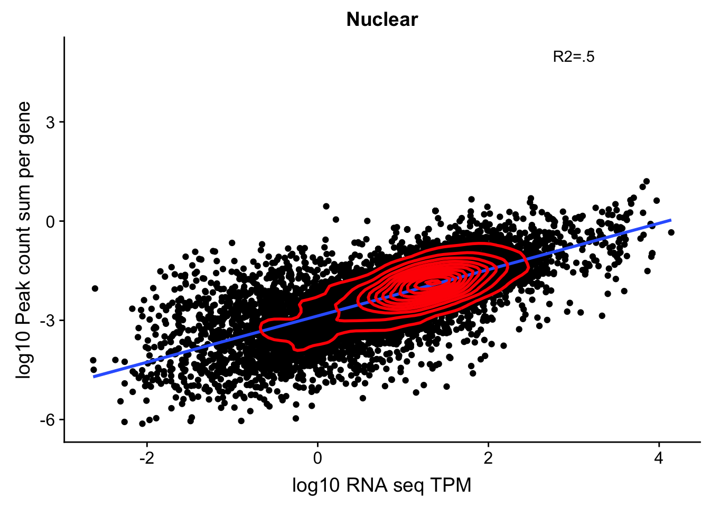
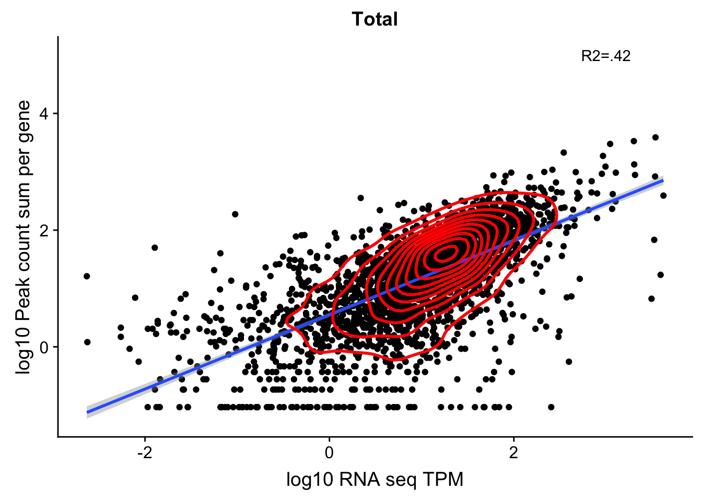
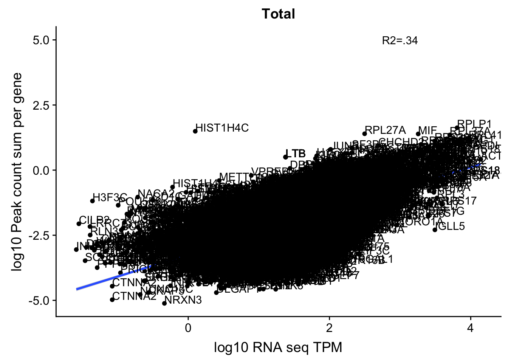
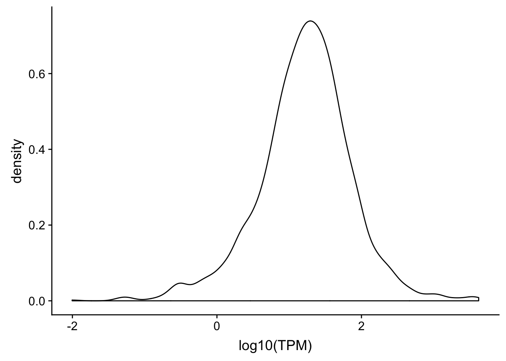
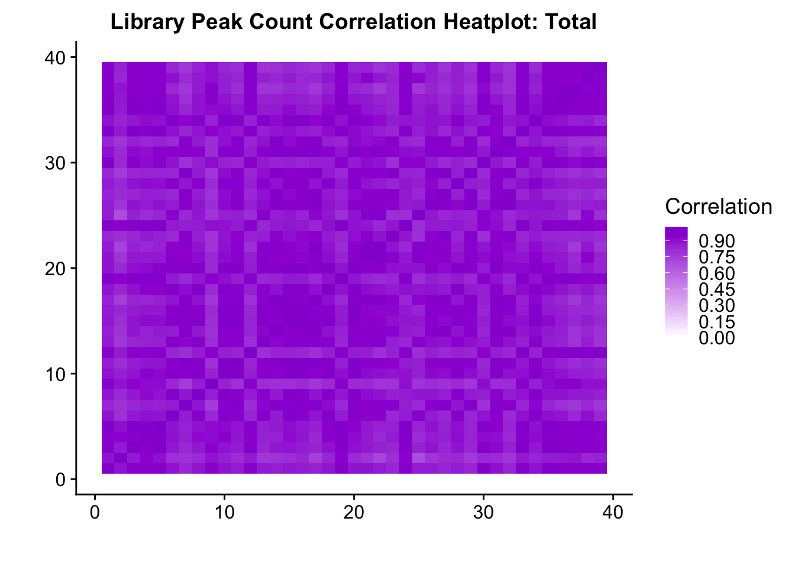

Investigate Peak to Gene Assignment
Briana Mittleman
12/11/2018
Last updated: 2019-01-15
workflowr checks: (Click a bullet for more information)-
✔ R Markdown file: up-to-date
Great! Since the R Markdown file has been committed to the Git repository, you know the exact version of the code that produced these results.
-
✔ Environment: empty
Great job! The global environment was empty. Objects defined in the global environment can affect the analysis in your R Markdown file in unknown ways. For reproduciblity it’s best to always run the code in an empty environment.
-
✔ Seed:
set.seed(12345)The command
set.seed(12345)was run prior to running the code in the R Markdown file. Setting a seed ensures that any results that rely on randomness, e.g. subsampling or permutations, are reproducible. -
✔ Session information: recorded
Great job! Recording the operating system, R version, and package versions is critical for reproducibility.
-
Great! You are using Git for version control. Tracking code development and connecting the code version to the results is critical for reproducibility. The version displayed above was the version of the Git repository at the time these results were generated.✔ Repository version: d26e548
Note that you need to be careful to ensure that all relevant files for the analysis have been committed to Git prior to generating the results (you can usewflow_publishorwflow_git_commit). workflowr only checks the R Markdown file, but you know if there are other scripts or data files that it depends on. Below is the status of the Git repository when the results were generated:
Note that any generated files, e.g. HTML, png, CSS, etc., are not included in this status report because it is ok for generated content to have uncommitted changes.Ignored files: Ignored: .DS_Store Ignored: .Rhistory Ignored: .Rproj.user/ Ignored: data/.DS_Store Ignored: output/.DS_Store Untracked files: Untracked: KalistoAbundance18486.txt Untracked: analysis/DirectionapaQTL.Rmd Untracked: analysis/PreAshExplore.Rmd Untracked: analysis/YL_QTL_test.Rmd Untracked: analysis/ncbiRefSeq_sm.sort.mRNA.bed Untracked: analysis/snake.config.notes.Rmd Untracked: analysis/verifyBAM.Rmd Untracked: code/PeaksToCoverPerReads.py Untracked: code/strober_pc_pve_heatmap_func.R Untracked: data/18486.genecov.txt Untracked: data/APApeaksYL.total.inbrain.bed Untracked: data/ChromHmmOverlap/ Untracked: data/GM12878.chromHMM.bed Untracked: data/GM12878.chromHMM.txt Untracked: data/LianoglouLCL/ Untracked: data/LocusZoom/ Untracked: data/NuclearApaQTLs.txt Untracked: data/PeakCounts/ Untracked: data/PeaksUsed/ Untracked: data/RNAkalisto/ Untracked: data/TotalApaQTLs.txt Untracked: data/Totalpeaks_filtered_clean.bed Untracked: data/UnderstandPeaksQC/ Untracked: data/YL-SP-18486-T-combined-genecov.txt Untracked: data/YL-SP-18486-T_S9_R1_001-genecov.txt Untracked: data/YL_QTL_test/ Untracked: data/apaExamp/ Untracked: data/bedgraph_peaks/ Untracked: data/bin200.5.T.nuccov.bed Untracked: data/bin200.Anuccov.bed Untracked: data/bin200.nuccov.bed Untracked: data/clean_peaks/ Untracked: data/comb_map_stats.csv Untracked: data/comb_map_stats.xlsx Untracked: data/comb_map_stats_39ind.csv Untracked: data/combined_reads_mapped_three_prime_seq.csv Untracked: data/diff_iso_trans/ Untracked: data/ensemble_to_genename.txt Untracked: data/example_gene_peakQuant/ Untracked: data/explainProtVar/ Untracked: data/filtered_APApeaks_merged_allchrom_refseqTrans.closest2End.bed Untracked: data/filtered_APApeaks_merged_allchrom_refseqTrans.closest2End.noties.bed Untracked: data/first50lines_closest.txt Untracked: data/gencov.test.csv Untracked: data/gencov.test.txt Untracked: data/gencov_zero.test.csv Untracked: data/gencov_zero.test.txt Untracked: data/gene_cov/ Untracked: data/joined Untracked: data/leafcutter/ Untracked: data/merged_combined_YL-SP-threeprimeseq.bg Untracked: data/mol_overlap/ Untracked: data/mol_pheno/ Untracked: data/nom_QTL/ Untracked: data/nom_QTL_opp/ Untracked: data/nom_QTL_trans/ Untracked: data/nuc6up/ Untracked: data/nuc_10up/ Untracked: data/other_qtls/ Untracked: data/pQTL_otherphen/ Untracked: data/peakPerRefSeqGene/ Untracked: data/perm_QTL/ Untracked: data/perm_QTL_opp/ Untracked: data/perm_QTL_trans/ Untracked: data/perm_QTL_trans_filt/ Untracked: data/reads_mapped_three_prime_seq.csv Untracked: data/smash.cov.results.bed Untracked: data/smash.cov.results.csv Untracked: data/smash.cov.results.txt Untracked: data/smash_testregion/ Untracked: data/ssFC200.cov.bed Untracked: data/temp.file1 Untracked: data/temp.file2 Untracked: data/temp.gencov.test.txt Untracked: data/temp.gencov_zero.test.txt Untracked: data/threePrimeSeqMetaData.csv Untracked: output/picard/ Untracked: output/plots/ Untracked: output/qual.fig2.pdf Unstaged changes: Modified: analysis/28ind.peak.explore.Rmd Modified: analysis/CompareLianoglouData.Rmd Modified: analysis/NewPeakPostMP.Rmd Modified: analysis/apaQTLoverlapGWAS.Rmd Modified: analysis/cleanupdtseq.internalpriming.Rmd Modified: analysis/coloc_apaQTLs_protQTLs.Rmd Modified: analysis/dif.iso.usage.leafcutter.Rmd Modified: analysis/diff_iso_pipeline.Rmd Modified: analysis/explainpQTLs.Rmd Modified: analysis/explore.filters.Rmd Modified: analysis/flash2mash.Rmd Modified: analysis/overlapMolQTL.Rmd Modified: analysis/overlap_qtls.Rmd Modified: analysis/peakOverlap_oppstrand.Rmd Modified: analysis/pheno.leaf.comb.Rmd Modified: analysis/swarmPlots_QTLs.Rmd Modified: analysis/test.max2.Rmd Modified: analysis/understandPeaks.Rmd Modified: code/Snakefile
Expand here to see past versions:
| File | Version | Author | Date | Message |
|---|---|---|---|---|
| Rmd | d26e548 | Briana Mittleman | 2019-01-15 | add correlation plots |
| html | b5a37f3 | Briana Mittleman | 2019-01-11 | Build site. |
| Rmd | d64db58 | Briana Mittleman | 2019-01-11 | add correlation plots |
| html | 69b5162 | Briana Mittleman | 2018-12-13 | Build site. |
| Rmd | 2a6944b | Briana Mittleman | 2018-12-13 | sum over ind |
| html | c3fd2c4 | Briana Mittleman | 2018-12-13 | Build site. |
| Rmd | b198e3b | Briana Mittleman | 2018-12-13 | 4kb around end |
| html | cbf986c | Briana Mittleman | 2018-12-12 | Build site. |
| Rmd | 23123cf | Briana Mittleman | 2018-12-12 | add only genes not nearby |
| html | 558e8e8 | Briana Mittleman | 2018-12-12 | Build site. |
| Rmd | 0e0840e | Briana Mittleman | 2018-12-12 | remove overlaping genes |
| html | 6da90e9 | Briana Mittleman | 2018-12-11 | Build site. |
library(tidyverse)── Attaching packages ───────────────────────────────────────────────────────────── tidyverse 1.2.1 ──✔ ggplot2 3.0.0 ✔ purrr 0.2.5
✔ tibble 1.4.2 ✔ dplyr 0.7.6
✔ tidyr 0.8.1 ✔ stringr 1.3.1
✔ readr 1.1.1 ✔ forcats 0.3.0── Conflicts ──────────────────────────────────────────────────────────────── tidyverse_conflicts() ──
✖ dplyr::filter() masks stats::filter()
✖ dplyr::lag() masks stats::lag()library(workflowr)This is workflowr version 1.1.1
Run ?workflowr for help getting startedlibrary(cowplot)
Attaching package: 'cowplot'The following object is masked from 'package:ggplot2':
ggsavelibrary(reshape2)
Attaching package: 'reshape2'The following object is masked from 'package:tidyr':
smithslibrary(tximport)In looking at correlations and some examples, there is evidence the peak to gene assignment may be a problem. I am going to visualize the peaks in IGV. I will name them by the gene and look at them in the browser.
The peak to gene annotations used in the feature counts to map reads back to the peaks is the following:
* /project2/gilad/briana/threeprimeseq/data/mergedPeaks_comb/filtered_APApeaks_merged_allchrom_refseqTrans.noties_sm.fixed.bed
I need to change this a bit to have the name be the gene rather than the score:
NamePeaksByGene.py
#python
CovnamedPeaks=open("/project2/gilad/briana/threeprimeseq/data/mergedPeaks_comb/filtered_APApeaks_merged_allchrom_refseqTrans.noties_sm.fixed.bed", "r")
GeneNamedPeaks=open("/project2/gilad/briana/threeprimeseq/data/UnderstandPeaksQC/PeaksNamedWithGeneAssignment.bed", "w")
for ln in CovnamedPeaks:
chrom, start, end, num, cov, strand, transcript = ln.split()
gene=transcript.split("-")[1]
GeneNamedPeaks.write("%s\t%s\t%s\t%s\n"%(chrom,start,end,gene))
GeneNamedPeaks.close()
This was made based on the transcript annotation: ncbiRefSeq.mRNA.named.bed
- /project2/gilad/briana/genome_anotation_data/ncbiRefSeq.mRNA.named.bed
The ends of the transcripts specfically are in:
- /project2/gilad/briana/genome_anotation_data/ncbiRefSeq_endProtCodGenes_sort.txt
Ideas for Dilters:
Cant be upstream of the gene, ex: chr2:135,558,075-135,604,343
maybe it cant be in another gene
we should include LINCs
looks like we have a ton of low expressed intergenic peaks that should be filtered before we do the gene annotation
Filter out intergenic peaks
As a first pass I want to filter out the peaks that are outside a gene body. While this may not be perfect it will help alot with the intergenic noise.
I need to overlap the named peaks with /project2/gilad/briana/genome_anotation_data/ncbiRefSeq.mRNA.named.bed and only keep the matches. I can use bedtools intersect.
Rename the peaks according to convention to run an intesect.
RenamePeaks4Intersect.py
#python
CovnamedPeaks=open("/project2/gilad/briana/threeprimeseq/data/mergedPeaks_comb/filtered_APApeaks_merged_allchrom_refseqTrans.noties_sm.fixed.bed", "r")
GeneNamedPeaks=open("/project2/gilad/briana/threeprimeseq/data/UnderstandPeaksQC/filtered_APApeaks_merged_allchrom_refseqTrans.noties_sm.fixed_RENAMED.bed", "w")
for ln in CovnamedPeaks:
chrom, start, end, num, cov, strand, transcript = ln.split()
gene=transcript.split("-")[1]
start=int(start)
end=int(end)
GeneNamedPeaks.write("%s\t%d\t%d\t%s-%s\t%s\t%s\n"%(chrom,start,end,num,gene,cov,strand))
GeneNamedPeaks.close()
Remove CHR from the refseq annpotation:
sed 's/^chr//' /project2/gilad/briana/genome_anotation_data/ncbiRefSeq.mRNA.named.bed > /project2/gilad/briana/genome_anotation_data/ncbiRefSeq.mRNA.named_noCHR.bedFilter4GenicPeaks.sh
#!/bin/bash
#SBATCH --job-name=Filter4GenicPeaks
#SBATCH --account=pi-yangili1
#SBATCH --time=24:00:00
#SBATCH --output=Filter4GenicPeaks.out
#SBATCH --error=Filter4GenicPeaks.err
#SBATCH --partition=broadwl
#SBATCH --mem=12G
#SBATCH --mail-type=END
module load Anaconda3
source activate three-prime-env
bedtools intersect -wa -s -a /project2/gilad/briana/threeprimeseq/data/UnderstandPeaksQC/filtered_APApeaks_merged_allchrom_refseqTrans.noties_sm.fixed_RENAMED.bed -b /project2/gilad/briana/genome_anotation_data/ncbiRefSeq.mRNA.named_noCHR.bed > /project2/gilad/briana/threeprimeseq/data/mergedPeaks_comb_inGeneBody/filtered_APApeaks_merged_allchrom_refseqTrans.noties_sm.fixed_inGeneBodies.bedThis is printing them multiple times.
uniq /project2/gilad/briana/threeprimeseq/data/mergedPeaks_comb_inGeneBody/filtered_APApeaks_merged_allchrom_refseqTrans.noties_sm.fixed_inGeneBodies.bed > /project2/gilad/briana/threeprimeseq/data/mergedPeaks_comb_inGeneBody/filtered_APApeaks_merged_allchrom_refseqTrans.noties_sm.fixed_inGeneBodiesUNIQ.bedNow I need to make this an SAF to run feature counts.
bed2saf_peaksInGenicReg.py
from misc_helper import *
fout = open("/project2/gilad/briana/threeprimeseq/data/mergedPeaks_comb_inGeneBody/filtered_APApeaks_merged_allchrom_refseqTrans.noties_sm.fixed_inGeneBodiesUNIQ.SAF",'w')
fout.write("GeneID\tChr\tStart\tEnd\tStrand\n")
for ln in open("/project2/gilad/briana/threeprimeseq/data/mergedPeaks_comb_inGeneBody/filtered_APApeaks_merged_allchrom_refseqTrans.noties_sm.fixed_inGeneBodiesUNIQ.bed"):
chrom, start, end, name, score, strand = ln.split()
namenum=name.split("-")[0]
name_i=int(namenum)
start_i=int(start)
end_i=int(end)
gene_only=name.split("-")[1]
ID = "peak%d:%s:%d:%d:%s:%s"%(name_i, chrom, start_i, end_i, strand, gene_only)
fout.write("%s\t%s\t%d\t%d\t%s\n"%(ID, chrom, start_i, end_i, strand))
fout.close()Run Feature Counts
PeaksinGenicRegion_fc_TN.sh
#!/bin/bash
#SBATCH --job-name=PeaksinGenicRegion_fc_TN
#SBATCH --account=pi-yangili1
#SBATCH --time=24:00:00
#SBATCH --output=PeaksinGenicRegion_fc_TN.out
#SBATCH --error=PeaksinGenicRegion_fc_TN.err
#SBATCH --partition=broadwl
#SBATCH --mem=12G
#SBATCH --mail-type=END
module load Anaconda3
source activate three-prime-env
featureCounts -O -a /project2/gilad/briana/threeprimeseq/data/mergedPeaks_comb_inGeneBody/filtered_APApeaks_merged_allchrom_refseqTrans.noties_sm.fixed_inGeneBodiesUNIQ.SAF -F SAF -o /project2/gilad/briana/threeprimeseq/data/PeakInGenecRegion_cov/filtered_APApeaks_merged_allchrom_refseqGenes.Transcript_sm_quant_Genic.Total.fc /project2/gilad/briana/threeprimeseq/data/sort/*-T-*-sort.bam -s 2
featureCounts -O -a /project2/gilad/briana/threeprimeseq/data/mergedPeaks_comb_inGeneBody/filtered_APApeaks_merged_allchrom_refseqTrans.noties_sm.fixed_inGeneBodiesUNIQ.SAF -F SAF -o /project2/gilad/briana/threeprimeseq/data/PeakInGenecRegion_cov/filtered_APApeaks_merged_allchrom_refseqGenes.Transcript_sm_quant_Genic.Nuclear.fc /project2/gilad/briana/threeprimeseq/data/sort/*-N-*-sort.bam -s 2
Lastly I will need to fix the headers.
fix_head_fc_genicPeak_tot.py
infile= open("/project2/gilad/briana/threeprimeseq/data/PeakInGenecRegion_cov/filtered_APApeaks_merged_allchrom_refseqGenes.Transcript_sm_quant_Genic.Total.fc", "r")
fout = open("/project2/gilad/briana/threeprimeseq/data/PeakInGenecRegion_cov/filtered_APApeaks_merged_allchrom_refseqGenes.Transcript_sm_quant_Genic.Total_fixed.fc",'w')
for line, i in enumerate(infile):
if line == 1:
i_list=i.split()
libraries=i_list[:6]
for sample in i_list[6:]:
full = sample.split("/")[7]
samp= full.split("-")[2:4]
lim="_"
samp_st=lim.join(samp)
libraries.append(samp_st)
first_line= "\t".join(libraries)
fout.write(first_line + '\n')
else :
fout.write(i)
fout.close()fix_head_fc_genicPeak_nuc.py
infile= open("/project2/gilad/briana/threeprimeseq/data/PeakInGenecRegion_cov/filtered_APApeaks_merged_allchrom_refseqGenes.Transcript_sm_quant_Genic.Nuclear.fc", "r")
fout = open("/project2/gilad/briana/threeprimeseq/data/PeakInGenecRegion_cov/filtered_APApeaks_merged_allchrom_refseqGenes.Transcript_sm_quant_Genic.Nuclear_fixed.fc",'w')
for line, i in enumerate(infile):
if line == 1:
i_list=i.split()
libraries=i_list[:6]
for sample in i_list[6:]:
full = sample.split("/")[7]
samp= full.split("-")[2:4]
lim="_"
samp_st=lim.join(samp)
libraries.append(samp_st)
first_line= "\t".join(libraries)
fout.write(first_line + '\n')
else :
fout.write(i)
fout.close()Pull these into R and look at the correlation between the sum of the peaks by gene and the transcripts counts from RNA seq.
TPM counts from Kalisto
tx2gene=read.table("../data/RNAkalisto/ncbiRefSeq.txn2gene.txt" ,header= F, sep="\t", stringsAsFactors = F)
txi.kallisto.tsv <- tximport("../data/RNAkalisto/abundance.tsv", type = "kallisto", tx2gene = tx2gene,countsFromAbundance="lengthScaledTPM" )Note: importing `abundance.h5` is typically faster than `abundance.tsv`reading in files with read_tsv1
removing duplicated transcript rows from tx2gene
transcripts missing from tx2gene: 99
summarizing abundance
summarizing counts
summarizing lengthIn previous analysis I did not account for gene length. Here I am going to standardize by length because I am taking a sum over a gene body.
Import gene lengths:
geneLengthNames=c("CHR", "start", "end", "gene", "score", "strand")
geneLengths=read.table("../data/UnderstandPeaksQC/refseq.ProteinCoding.bed", header=F, stringsAsFactors = F, col.names = geneLengthNames) %>% mutate(length=end-start) %>% select(gene, length)Look at the correlation with the total:
I am using the sum of the counts in a gene divided by how many million reads mapped. I am also filtering out peaks with less than 10 reads in this individual.
total_Cov_18486=read.table("../data/UnderstandPeaksQC/filtered_APApeaks_merged_allchrom_refseqGenes.Transcript_sm_quant_Genic.Total_fixed.fc", header=T, stringsAsFactors = F)[,1:7] %>% separate(Geneid, into=c("peak", "chr", "start", "end", "strand", "gene"), sep=":") %>% select(gene, X18486_T) %>% filter(X18486_T>0) %>% group_by(gene) %>% summarize(GeneSum=sum(X18486_T)) %>% mutate(GeneSumNorm=GeneSum/10.8) %>% inner_join(geneLengths, by="gene") %>% mutate(GeneSumSt=GeneSum/length)Join the data frames.
TXN_abund=as.data.frame(txi.kallisto.tsv$abundance) %>% rownames_to_column(var="gene")
colnames(TXN_abund)=c("gene", "TPM")
TXN_NormGene=TXN_abund %>% inner_join(total_Cov_18486,by="gene")Remove rows with 0 counts and Plot:
TXN_NormGene=TXN_NormGene %>% filter(TPM>0) %>% filter(GeneSumSt>0)
corr_18486Tot=ggplot(TXN_NormGene, aes(x=log10(TPM), y= log10(GeneSumSt))) + geom_point() + labs(title="Total", x="log10 RNA seq TPM", y="log10 Peak count sum per gene")+ geom_smooth(aes(x=log10(TPM),y=log10(GeneSumSt)),method = "lm") + annotate("text",x=3, y=5,label="R2=.48") +geom_density2d(na.rm = TRUE, size = 1, colour = 'red')
#+ geom_text(aes(label=gene),hjust=0, vjust=0)
corr_18486Tot Expand here to see past versions of unnamed-chunk-15-1.png:
| Version | Author | Date |
|---|---|---|
| 558e8e8 | Briana Mittleman | 2018-12-12 |
summary(lm(log10(TPM)~log10(GeneSumSt),TXN_NormGene))
Call:
lm(formula = log10(TPM) ~ log10(GeneSumSt), data = TXN_NormGene)
Residuals:
Min 1Q Median 3Q Max
-3.5894 -0.2556 0.0856 0.3676 2.3387
Coefficients:
Estimate Std. Error t value Pr(>|t|)
(Intercept) 2.407969 0.013563 177.5 <2e-16 ***
log10(GeneSumSt) 0.612175 0.005812 105.3 <2e-16 ***
---
Signif. codes: 0 '***' 0.001 '**' 0.01 '*' 0.05 '.' 0.1 ' ' 1
Residual standard error: 0.598 on 12053 degrees of freedom
Multiple R-squared: 0.4793, Adjusted R-squared: 0.4793
F-statistic: 1.11e+04 on 1 and 12053 DF, p-value: < 2.2e-16cor.test(log10(TXN_NormGene$TPM),log10(TXN_NormGene$GeneSumSt))
Pearson's product-moment correlation
data: log10(TXN_NormGene$TPM) and log10(TXN_NormGene$GeneSumSt)
t = 105.34, df = 12053, p-value < 2.2e-16
alternative hypothesis: true correlation is not equal to 0
95 percent confidence interval:
0.6829262 0.7015184
sample estimates:
cor
0.6923372 Try this with nuclear
nuclear_Cov_18486=read.table("../data/UnderstandPeaksQC/filtered_APApeaks_merged_allchrom_refseqGenes.Transcript_sm_quant_Genic.Nuclear_fixed.fc", header=T, stringsAsFactors = F)[,1:7] %>% separate(Geneid, into=c("peak", "chr", "start", "end", "strand", "gene"), sep=":") %>% select(gene, X18486_N) %>% filter(X18486_N>10) %>% group_by(gene) %>% summarize(GeneSum=sum(X18486_N)) %>% mutate(GeneSumNorm=GeneSum/11.4) %>% inner_join(geneLengths, by="gene") %>% mutate(GeneSumSt=GeneSum/length)Join the data frames.
TXN_NormGene_nuc=TXN_abund %>% inner_join(nuclear_Cov_18486,by="gene")Remove rows with 0 counts and Plot:
TXN_NormGene_nuc=TXN_NormGene_nuc %>% filter(TPM>0) %>% filter(GeneSumSt>0)
corr_18486Nuc=ggplot(TXN_NormGene_nuc, aes(x=log10(TPM), y= log10(GeneSumSt))) + geom_point() + labs(title="Nuclear", x="log10 RNA seq TPM", y="log10 Peak count sum per gene")+ geom_smooth(aes(x=log10(TPM),y=log10(GeneSumSt)),method = "lm") + annotate("text",x=3, y=5,label="R2=.37") + geom_density2d(na.rm = TRUE, size = 1, colour = 'red')
#+ geom_text(aes(label=gene),hjust=0, vjust=0)
corr_18486Nuc 
Expand here to see past versions of unnamed-chunk-18-1.png:
| Version | Author | Date |
|---|---|---|
| 558e8e8 | Briana Mittleman | 2018-12-12 |
summary(lm(log10(TPM)~log10(GeneSumSt),TXN_NormGene_nuc))
Call:
lm(formula = log10(TPM) ~ log10(GeneSumSt), data = TXN_NormGene_nuc)
Residuals:
Min 1Q Median 3Q Max
-3.7211 -0.2691 0.0733 0.3789 2.5253
Coefficients:
Estimate Std. Error t value Pr(>|t|)
(Intercept) 2.451150 0.017039 143.85 <2e-16 ***
log10(GeneSumSt) 0.654587 0.008008 81.74 <2e-16 ***
---
Signif. codes: 0 '***' 0.001 '**' 0.01 '*' 0.05 '.' 0.1 ' ' 1
Residual standard error: 0.6324 on 11567 degrees of freedom
Multiple R-squared: 0.3661, Adjusted R-squared: 0.3661
F-statistic: 6681 on 1 and 11567 DF, p-value: < 2.2e-16cor.test(log10(TXN_NormGene_nuc$TPM),log10(TXN_NormGene_nuc$GeneSumSt))
Pearson's product-moment correlation
data: log10(TXN_NormGene_nuc$TPM) and log10(TXN_NormGene_nuc$GeneSumSt)
t = 81.74, df = 11567, p-value < 2.2e-16
alternative hypothesis: true correlation is not equal to 0
95 percent confidence interval:
0.593414 0.616518
sample estimates:
cor
0.6050934 This just said it had to be in a gene body not the specific gene body. This could be a problem still. For example in the SSPO locus chr7:149,521,993-149,543,749. Here the peaks are closer to the end of the SSPO but are in the gene body of the next gene downstream.
Histones dont have a polyA tail- the HIST1H4C peak is most likely misprimming (chr6:26,102,306-26,110,443)
Filter out overlapping genes:
Count overlaps in origial file:
bedtools merge -i IN.bed -c 1 -o count > counted
countGeneOverlap.sh
#!/bin/bash
#SBATCH --job-name=countGeneOverlap
#SBATCH --account=pi-yangili1
#SBATCH --time=24:00:00
#SBATCH --output=countGeneOverlap.out
#SBATCH --error=countGeneOverlap.err
#SBATCH --partition=broadwl
#SBATCH --mem=12G
#SBATCH --mail-type=END
module load Anaconda3
source activate three-prime-env
bedtools merge -i /project2/gilad/briana/genome_anotation_data/refseq.ProteinCoding.noCHR.bed -c 1 -o count > /project2/gilad/briana/genome_anotation_data/refseq.ProteinCoding.countGeneOverlap.bed Filter out these rows: awk '/\t1$/{print}' counted > filtered
awk '/\t1$/{print}' /project2/gilad/briana/genome_anotation_data/refseq.ProteinCoding.countGeneOverlap.bed > /project2/gilad/briana/genome_anotation_data/refseq.ProteinCoding.countGeneOverlap.filtered.bedIntersect with original input to only keep the ones in both sets.
bedtools intersect -a IN.bed -b filtered -wa > OUT.bed
findGeneswithoutOverlap.sh
#!/bin/bash
#SBATCH --job-name=findGeneswithoutOverlap.sh
#SBATCH --account=pi-yangili1
#SBATCH --time=24:00:00
#SBATCH --output=findGeneswithoutOverlap.out
#SBATCH --error=findGeneswithoutOverlap.err
#SBATCH --partition=broadwl
#SBATCH --mem=12G
#SBATCH --mail-type=END
module load Anaconda3
source activate three-prime-env
bedtools intersect -a /project2/gilad/briana/genome_anotation_data/refseq.ProteinCoding.noCHR.bed -b /project2/gilad/briana/genome_anotation_data/refseq.ProteinCoding.countGeneOverlap.filtered.bed -wa > /project2/gilad/briana/genome_anotation_data/refseq.ProteinCoding.NonOverlapGenes.bed
Finally overlap with the mRNA file to only keep the transcripts in these genes. This may be easiest in python /project2/gilad/briana/genome_anotation_data/ncbiRefSeq.mRNA.named_noCHR.bed
subsetmRNAforNonOverlapGenes.py
geneFile=open("/project2/gilad/briana/genome_anotation_data/refseq.ProteinCoding.NonOverlapGenes.bed", "r")
mRNAFile=open("/project2/gilad/briana/genome_anotation_data/ncbiRefSeq.mRNA.named_noCHR.bed", "r")
outFile=open("/project2/gilad/briana/genome_anotation_data/ncbiRefSeq.mRNA.named_noCHR_NoneOverlapingGenes.bed", "w")
#make list of non overlapping genes
keep=[]
for ln in geneFile:
keep.append(ln.split()[3])
for ln in mRNAFile:
if ln.split()[4] in keep:
outFile.write(ln)
outFile.close()
Filter peaks on this resutls
Filter4GenicPeaks_noOverlap.sh
#!/bin/bash
#SBATCH --job-name=Filter4GenicPeaks
#SBATCH --account=pi-yangili1
#SBATCH --time=24:00:00
#SBATCH --output=Filter4GenicPeaks.out
#SBATCH --error=Filter4GenicPeaks.err
#SBATCH --partition=broadwl
#SBATCH --mem=12G
#SBATCH --mail-type=END
module load Anaconda3
source activate three-prime-env
bedtools intersect -wa -s -a /project2/gilad/briana/threeprimeseq/data/UnderstandPeaksQC/filtered_APApeaks_merged_allchrom_refseqTrans.noties_sm.fixed_RENAMED.bed -b /project2/gilad/briana/genome_anotation_data/ncbiRefSeq.mRNA.named_noCHR_NoneOverlapingGenes.bed> /project2/gilad/briana/threeprimeseq/data/mergedPeaks_comb_inGeneBody/filtered_APApeaks_merged_allchrom_refseqTrans.noties_sm.fixed_inGeneBodies_noGeneOverlap.bedThis is printing them multiple times.
uniq /project2/gilad/briana/threeprimeseq/data/mergedPeaks_comb_inGeneBody/filtered_APApeaks_merged_allchrom_refseqTrans.noties_sm.fixed_inGeneBodies_noGeneOverlap.bed > /project2/gilad/briana/threeprimeseq/data/mergedPeaks_comb_inGeneBody/filtered_APApeaks_merged_allchrom_refseqTrans.noties_sm.fixed_inGeneBodies_noGeneOverlap_UNIQ.bedMake this an SAF to run FC
bed2saf_peaksInGenicReg_noOVERLAP.py
from misc_helper import *
fout = open("/project2/gilad/briana/threeprimeseq/data/mergedPeaks_comb_inGeneBody/filtered_APApeaks_merged_allchrom_refseqTrans.noties_sm.fixed_inGeneBodies_noGeneOverlap_UNIQ.SAF",'w')
fout.write("GeneID\tChr\tStart\tEnd\tStrand\n")
for ln in open("/project2/gilad/briana/threeprimeseq/data/mergedPeaks_comb_inGeneBody/filtered_APApeaks_merged_allchrom_refseqTrans.noties_sm.fixed_inGeneBodies_noGeneOverlap_UNIQ.bed"):
chrom, start, end, name, score, strand = ln.split()
namenum=name.split("-")[0]
name_i=int(namenum)
start_i=int(start)
end_i=int(end)
gene_only=name.split("-")[1]
ID = "peak%d:%s:%d:%d:%s:%s"%(name_i, chrom, start_i, end_i, strand, gene_only)
fout.write("%s\t%s\t%d\t%d\t%s\n"%(ID, chrom, start_i, end_i, strand))
fout.close()Run Feature Counts
PeaksinGenicRegion_NoneOverlapGenes_fc_TN.sh
#!/bin/bash
#SBATCH --job-name=PeaksinGenicRegion_NoneOverlapGenes_fc_TN
#SBATCH --account=pi-yangili1
#SBATCH --time=24:00:00
#SBATCH --output=PeaksinGenicRegion_NoneOverlapGenes_fc_TN.out
#SBATCH --error=PeaksinGenicRegion_NoneOverlapGenes_fc_TN.err
#SBATCH --partition=broadwl
#SBATCH --mem=12G
#SBATCH --mail-type=END
module load Anaconda3
source activate three-prime-env
featureCounts -O -a /project2/gilad/briana/threeprimeseq/data/mergedPeaks_comb_inGeneBody/filtered_APApeaks_merged_allchrom_refseqTrans.noties_sm.fixed_inGeneBodies_noGeneOverlap_UNIQ.SAF -F SAF -o /project2/gilad/briana/threeprimeseq/data/PeakInGenecRegionNoOverlap_cov/filtered_APApeaks_merged_allchrom_refseqGenes.Transcript_sm_quant_GenicNoOverlap.Total.fc /project2/gilad/briana/threeprimeseq/data/sort/*-T-*-sort.bam -s 2
featureCounts -O -a /project2/gilad/briana/threeprimeseq/data/mergedPeaks_comb_inGeneBody/filtered_APApeaks_merged_allchrom_refseqTrans.noties_sm.fixed_inGeneBodies_noGeneOverlap_UNIQ.SAF -F SAF -o /project2/gilad/briana/threeprimeseq/data/PeakInGenecRegionNoOverlap_cov/filtered_APApeaks_merged_allchrom_refseqGenes.Transcript_sm_quant_GenicNoOverlap.Nuclear.fc /project2/gilad/briana/threeprimeseq/data/sort/*-N-*-sort.bam -s 2
Lastly I will need to fix the headers.
fix_head_fc_genicPeakNoOverlap_tot.py
infile= open("/project2/gilad/briana/threeprimeseq/data/PeakInGenecRegionNoOverlap_cov/filtered_APApeaks_merged_allchrom_refseqGenes.Transcript_sm_quant_GenicNoOverlap.Total.fc", "r")
fout = open("/project2/gilad/briana/threeprimeseq/data/PeakInGenecRegionNoOverlap_cov/filtered_APApeaks_merged_allchrom_refseqGenes.Transcript_sm_quant_GenicNoOverlap.Total_fixed.fc",'w')
for line, i in enumerate(infile):
if line == 1:
i_list=i.split()
libraries=i_list[:6]
for sample in i_list[6:]:
full = sample.split("/")[7]
samp= full.split("-")[2:4]
lim="_"
samp_st=lim.join(samp)
libraries.append(samp_st)
first_line= "\t".join(libraries)
fout.write(first_line + '\n')
else :
fout.write(i)
fout.close()fix_head_fc_genicPeakNoOverlap_nuc.py
infile= open("/project2/gilad/briana/threeprimeseq/data/PeakInGenecRegionNoOverlap_cov/filtered_APApeaks_merged_allchrom_refseqGenes.Transcript_sm_quant_GenicNoOverlap.Nuclear.fc", "r")
fout = open("/project2/gilad/briana/threeprimeseq/data/PeakInGenecRegionNoOverlap_cov/filtered_APApeaks_merged_allchrom_refseqGenes.Transcript_sm_quant_GenicNoOverlap.Nuclear_fixed.fc",'w')
for line, i in enumerate(infile):
if line == 1:
i_list=i.split()
libraries=i_list[:6]
for sample in i_list[6:]:
full = sample.split("/")[7]
samp= full.split("-")[2:4]
lim="_"
samp_st=lim.join(samp)
libraries.append(samp_st)
first_line= "\t".join(libraries)
fout.write(first_line + '\n')
else :
fout.write(i)
fout.close()
Pull these onto my computer:
Use no filter and standardization scheme:
total_Cov_18486_noOver=read.table("../data/UnderstandPeaksQC/filtered_APApeaks_merged_allchrom_refseqGenes.Transcript_sm_quant_GenicNoOverlap.Total_fixed.fc", header=T, stringsAsFactors = F)[,1:7] %>% separate(Geneid, into=c("peak", "chr", "start", "end", "strand", "gene"), sep=":") %>% select(gene, X18486_T)%>% group_by(gene) %>% summarize(GeneSum=sum(X18486_T)) %>% mutate(GeneSumNorm=GeneSum/10.8) %>% inner_join(geneLengths, by="gene") %>% mutate(GeneSumSt=GeneSum/length)Join the data frames.
TXN_NormGene_noOverlap=TXN_abund %>% inner_join(total_Cov_18486_noOver,by="gene")Remove rows with 0 counts and Plot:
TXN_NormGene_noOverlap=TXN_NormGene_noOverlap %>% filter(TPM>0) %>% filter(GeneSumSt>0)
corr_18486Tot_noOver=ggplot(TXN_NormGene_noOverlap, aes(x=log10(TPM), y= log10(GeneSumSt))) + geom_point() + labs(title="Total", x="log10 RNA seq TPM", y="log10 Peak count sum per gene")+ geom_smooth(aes(x=log10(TPM),y=log10(GeneSumSt)),method = "lm") + annotate("text",x=3, y=5,label="R2=.49") +geom_density2d(na.rm = TRUE, size = 1, colour = 'red') + geom_text(aes(label=gene),hjust=0, vjust=0)
corr_18486Tot_noOver Expand here to see past versions of unnamed-chunk-31-1.png:
| Version | Author | Date |
|---|---|---|
| cbf986c | Briana Mittleman | 2018-12-12 |
summary(lm(log10(TPM)~log10(GeneSumSt),TXN_NormGene_noOverlap))
Call:
lm(formula = log10(TPM) ~ log10(GeneSumSt), data = TXN_NormGene_noOverlap)
Residuals:
Min 1Q Median 3Q Max
-3.3953 -0.2604 0.0768 0.3638 2.8920
Coefficients:
Estimate Std. Error t value Pr(>|t|)
(Intercept) 2.435113 0.014849 163.99 <2e-16 ***
log10(GeneSumSt) 0.616937 0.006274 98.34 <2e-16 ***
---
Signif. codes: 0 '***' 0.001 '**' 0.01 '*' 0.05 '.' 0.1 ' ' 1
Residual standard error: 0.5973 on 10088 degrees of freedom
Multiple R-squared: 0.4894, Adjusted R-squared: 0.4894
F-statistic: 9671 on 1 and 10088 DF, p-value: < 2.2e-16cor.test(log10(TXN_NormGene_noOverlap$TPM),log10(TXN_NormGene_noOverlap$GeneSumSt))
Pearson's product-moment correlation
data: log10(TXN_NormGene_noOverlap$TPM) and log10(TXN_NormGene_noOverlap$GeneSumSt)
t = 98.339, df = 10088, p-value < 2.2e-16
alternative hypothesis: true correlation is not equal to 0
95 percent confidence interval:
0.6894966 0.7094251
sample estimates:
cor
0.6995969 nuclear_Cov_18486_noOver=read.table("../data/UnderstandPeaksQC/filtered_APApeaks_merged_allchrom_refseqGenes.Transcript_sm_quant_GenicNoOverlap.Nuclear_fixed.fc", header=T, stringsAsFactors = F)[,1:7] %>% separate(Geneid, into=c("peak", "chr", "start", "end", "strand", "gene"), sep=":") %>% select(gene, X18486_N) %>% group_by(gene) %>% summarize(GeneSum=sum(X18486_N)) %>% mutate(GeneSumNorm=GeneSum/11.4) %>% inner_join(geneLengths, by="gene") %>% mutate(GeneSumSt=GeneSum/length)Join the data frames.
TXN_NormGene_noOverlap_nuc=TXN_abund %>% inner_join(nuclear_Cov_18486_noOver,by="gene")Remove rows with 0 counts and Plot:
TXN_NormGene_noOverlap_nuc=TXN_NormGene_noOverlap_nuc %>% filter(TPM>0) %>% filter(GeneSumSt>0)
corr_18486Nuc_noOver=ggplot(TXN_NormGene_noOverlap_nuc, aes(x=log10(TPM), y= log10(GeneSumSt))) + geom_point() + labs(title="Nuclear", x="log10 RNA seq TPM", y="log10 Peak count sum per gene")+ geom_smooth(aes(x=log10(TPM),y=log10(GeneSumSt)),method = "lm") + annotate("text",x=3, y=5,label="R2=.5") +geom_density2d(na.rm = TRUE, size = 1, colour = 'red')
#+ geom_text(aes(label=gene),hjust=0, vjust=0)
corr_18486Nuc_noOver 
Expand here to see past versions of unnamed-chunk-34-1.png:
| Version | Author | Date |
|---|---|---|
| cbf986c | Briana Mittleman | 2018-12-12 |
summary(lm(log10(TPM)~log10(GeneSumSt),TXN_NormGene_noOverlap_nuc))
Call:
lm(formula = log10(TPM) ~ log10(GeneSumSt), data = TXN_NormGene_noOverlap_nuc)
Residuals:
Min 1Q Median 3Q Max
-3.6947 -0.2989 0.0630 0.3825 2.8300
Coefficients:
Estimate Std. Error t value Pr(>|t|)
(Intercept) 2.530468 0.016063 157.5 <2e-16 ***
log10(GeneSumSt) 0.708816 0.006819 103.9 <2e-16 ***
---
Signif. codes: 0 '***' 0.001 '**' 0.01 '*' 0.05 '.' 0.1 ' ' 1
Residual standard error: 0.647 on 10965 degrees of freedom
Multiple R-squared: 0.4963, Adjusted R-squared: 0.4963
F-statistic: 1.08e+04 on 1 and 10965 DF, p-value: < 2.2e-16cor.test(log10(TXN_NormGene_noOverlap_nuc$TPM),log10(TXN_NormGene_noOverlap_nuc$GeneSumSt),method="spearman")Warning in cor.test.default(log10(TXN_NormGene_noOverlap_nuc$TPM),
log10(TXN_NormGene_noOverlap_nuc$GeneSumSt), : Cannot compute exact p-value
with ties
Spearman's rank correlation rho
data: log10(TXN_NormGene_noOverlap_nuc$TPM) and log10(TXN_NormGene_noOverlap_nuc$GeneSumSt)
S = 6.8486e+10, p-value < 2.2e-16
alternative hypothesis: true rho is not equal to 0
sample estimates:
rho
0.6884764 It looks like a more stringent RNA seq filter could help. Lets say log(TPM)>-1.5
TXN_abund_filt=TXN_abund %>% filter(log(TPM) > -1.5)
TXN_NormGene_noOverlap_filt=TXN_abund_filt %>% inner_join(total_Cov_18486_noOver,by="gene")
TXN_NormGene_noOverlap_filt=TXN_NormGene_noOverlap_filt %>% filter(TPM >0) %>% filter(GeneSumSt>0)
corr_18486Tot_noOver_filt=ggplot(TXN_NormGene_noOverlap_filt, aes(x=log10(TPM), y= log10(GeneSumSt))) + geom_point() + labs(title="Total filtered", x="log10 RNA seq TPM", y="log10 Peak count sum per gene")+ geom_smooth(aes(x=log10(TPM),y=log10(GeneSumSt)),method = "lm") + annotate("text",x=3, y=5,label="R2=.49") +geom_density2d(na.rm = TRUE, size = 1, colour = 'red')
#+ geom_text(aes(label=gene),hjust=0, vjust=0)
corr_18486Tot_noOver_filt Expand here to see past versions of unnamed-chunk-35-1.png:
| Version | Author | Date |
|---|---|---|
| cbf986c | Briana Mittleman | 2018-12-12 |
summary(lm(log10(TPM)~log10(GeneSumSt),TXN_NormGene_noOverlap_filt))
Call:
lm(formula = log10(TPM) ~ log10(GeneSumSt), data = TXN_NormGene_noOverlap_filt)
Residuals:
Min 1Q Median 3Q Max
-3.05828 -0.26269 0.03857 0.31263 2.64091
Coefficients:
Estimate Std. Error t value Pr(>|t|)
(Intercept) 2.344999 0.012950 181.08 <2e-16 ***
log10(GeneSumSt) 0.544908 0.005639 96.63 <2e-16 ***
---
Signif. codes: 0 '***' 0.001 '**' 0.01 '*' 0.05 '.' 0.1 ' ' 1
Residual standard error: 0.4998 on 9677 degrees of freedom
Multiple R-squared: 0.4911, Adjusted R-squared: 0.491
F-statistic: 9338 on 1 and 9677 DF, p-value: < 2.2e-16cor.test(log10(TXN_NormGene_noOverlap_filt$TPM),log10(TXN_NormGene_noOverlap_filt$GeneSumSt),method="spearman")Warning in cor.test.default(log10(TXN_NormGene_noOverlap_filt$TPM),
log10(TXN_NormGene_noOverlap_filt$GeneSumSt), : Cannot compute exact p-
value with ties
Spearman's rank correlation rho
data: log10(TXN_NormGene_noOverlap_filt$TPM) and log10(TXN_NormGene_noOverlap_filt$GeneSumSt)
S = 4.7005e+10, p-value < 2.2e-16
alternative hypothesis: true rho is not equal to 0
sample estimates:
rho
0.6889706 This does not take care of genes that are near each other such as what is going on with SSPO
Filter genes that are too close together
This is similar to the overlap problem but I want to extend the genes.
I can a python script to subtract 10000 bases from the start and add 10000 to the end
*/project2/gilad/briana/genome_anotation_data/refseq.ProteinCoding.noCHR.bed
extendGenes.py
inFile=open("/project2/gilad/briana/genome_anotation_data/refseq.ProteinCoding.noCHR.bed", "r")
outFile=open("/project2/gilad/briana/genome_anotation_data/refseq.ProteinCoding.noCHR_EXT.bed", "w")\
for ln in inFile:
chrom, start, end, gene, score, strand = ln.split()
start_ex=int(start)-10000
if start_ex <0:
start_ex=0
end_ex=int(end)+10000
outFile.write("%s\t%d\t%d\t%s\t%s\t%s\n"%(chrom, start_ex, end_ex, gene, score, strand))
outFile.close()Now I can run the merge:
countGeneOverlap_EXT.sh
#!/bin/bash
#SBATCH --job-name=countGeneOverlap_EXT
#SBATCH --account=pi-yangili1
#SBATCH --time=24:00:00
#SBATCH --output=countGeneOverlap_EXT.out
#SBATCH --error=countGeneOverlap_EXT.err
#SBATCH --partition=broadwl
#SBATCH --mem=12G
#SBATCH --mail-type=END
module load Anaconda3
source activate three-prime-env
bedtools merge -i /project2/gilad/briana/genome_anotation_data/refseq.ProteinCoding.noCHR_EXT.bed -c 1 -o count > /project2/gilad/briana/genome_anotation_data/refseq.ProteinCoding.countGeneOverlap_EXT.bed Filter out these rows: awk '/\t1$/{print}' counted > filtered
awk '/\t1$/{print}' /project2/gilad/briana/genome_anotation_data/refseq.ProteinCoding.countGeneOverlap_EXT.bed > /project2/gilad/briana/genome_anotation_data/refseq.ProteinCoding.countGeneOverlap_EXT_filter.bedIntersect with original input to only keep the ones in both sets.
bedtools intersect -a IN.bed -b filtered -wa > OUT.bed
findGeneswithoutOverlap_EXT.sh
#!/bin/bash
#SBATCH --job-name=findGeneswithoutOverlap_EXT.sh
#SBATCH --account=pi-yangili1
#SBATCH --time=24:00:00
#SBATCH --output=findGeneswithoutOverlap_EXT.out
#SBATCH --error=findGeneswithoutOverlap_EXT.err
#SBATCH --partition=broadwl
#SBATCH --mem=12G
#SBATCH --mail-type=END
module load Anaconda3
source activate three-prime-env
bedtools intersect -a /project2/gilad/briana/genome_anotation_data/refseq.ProteinCoding.noCHR.bed -b /project2/gilad/briana/genome_anotation_data/refseq.ProteinCoding.countGeneOverlap_EXT_filter.bed -wa > /project2/gilad/briana/genome_anotation_data/refseq.ProteinCoding.NonOverlapGenes_EXT.bed
Finally overlap with the mRNA file to only keep the transcripts in these genes. This may be easiest in python /project2/gilad/briana/genome_anotation_data/ncbiRefSeq.mRNA.named_noCHR.bed
subsetmRNAforNonOverlapGenes_EXT.py
geneFile=open("/project2/gilad/briana/genome_anotation_data/refseq.ProteinCoding.NonOverlapGenes_EXT.bed", "r")
mRNAFile=open("/project2/gilad/briana/genome_anotation_data/ncbiRefSeq.mRNA.named_noCHR.bed", "r")
outFile=open("/project2/gilad/briana/genome_anotation_data/ncbiRefSeq.mRNA.named_noCHR_NoneOverlapingGenes_EXT.bed", "w")
#make list of non overlapping genes
keep=[]
for ln in geneFile:
keep.append(ln.split()[3])
for ln in mRNAFile:
if ln.split()[4] in keep:
outFile.write(ln)
outFile.close()
Filter4GenicPeaks_noOverlap_EXT.sh
#!/bin/bash
#SBATCH --job-name=Filter4GenicPeaks_EXT
#SBATCH --account=pi-yangili1
#SBATCH --time=24:00:00
#SBATCH --output=Filter4GenicPeaks_EXT.out
#SBATCH --error=Filter4GenicPeaks_EXT.err
#SBATCH --partition=broadwl
#SBATCH --mem=12G
#SBATCH --mail-type=END
module load Anaconda3
source activate three-prime-env
bedtools intersect -wa -s -a /project2/gilad/briana/threeprimeseq/data/UnderstandPeaksQC/filtered_APApeaks_merged_allchrom_refseqTrans.noties_sm.fixed_RENAMED.bed -b /project2/gilad/briana/genome_anotation_data/ncbiRefSeq.mRNA.named_noCHR_NoneOverlapingGenes_EXT.bed > /project2/gilad/briana/threeprimeseq/data/mergedPeaks_comb_inGeneBody/filtered_APApeaks_merged_allchrom_refseqTrans.noties_sm.fixed_inGeneBodies_noGeneOverlapEXT.bedThis is printing them multiple times.
uniq /project2/gilad/briana/threeprimeseq/data/mergedPeaks_comb_inGeneBody/filtered_APApeaks_merged_allchrom_refseqTrans.noties_sm.fixed_inGeneBodies_noGeneOverlapEXT.bed > /project2/gilad/briana/threeprimeseq/data/mergedPeaks_comb_inGeneBody/filtered_APApeaks_merged_allchrom_refseqTrans.noties_sm.fixed_inGeneBodies_noGeneOverlapEXT_UNIQ.bedMake this an SAF to run FC
bed2saf_peaksInGenicReg_noOVERLAPEXT.py
from misc_helper import *
fout = open("/project2/gilad/briana/threeprimeseq/data/mergedPeaks_comb_inGeneBody/filtered_APApeaks_merged_allchrom_refseqTrans.noties_sm.fixed_inGeneBodies_noGeneOverlapEXT_UNIQ.SAF",'w')
fout.write("GeneID\tChr\tStart\tEnd\tStrand\n")
for ln in open("/project2/gilad/briana/threeprimeseq/data/mergedPeaks_comb_inGeneBody/filtered_APApeaks_merged_allchrom_refseqTrans.noties_sm.fixed_inGeneBodies_noGeneOverlapEXT_UNIQ.bed"):
chrom, start, end, name, score, strand = ln.split()
namenum=name.split("-")[0]
name_i=int(namenum)
start_i=int(start)
end_i=int(end)
gene_only=name.split("-")[1]
ID = "peak%d:%s:%d:%d:%s:%s"%(name_i, chrom, start_i, end_i, strand, gene_only)
fout.write("%s\t%s\t%d\t%d\t%s\n"%(ID, chrom, start_i, end_i, strand))
fout.close()Run Feature Counts
PeaksinGenicRegion_NoneOverlapGenesEXT_fc_TN.sh
#!/bin/bash
#SBATCH --job-name=PeaksinGenicRegion_NoneOverlapGenesEXT_fc_TN
#SBATCH --account=pi-yangili1
#SBATCH --time=24:00:00
#SBATCH --output=PeaksinGenicRegion_NoneOverlapGenesEXT_fc_TN.out
#SBATCH --error=PeaksinGenicRegion_NoneOverlapGenesEXT_fc_TN.err
#SBATCH --partition=broadwl
#SBATCH --mem=12G
#SBATCH --mail-type=END
module load Anaconda3
source activate three-prime-env
featureCounts -O -a /project2/gilad/briana/threeprimeseq/data/mergedPeaks_comb_inGeneBody/filtered_APApeaks_merged_allchrom_refseqTrans.noties_sm.fixed_inGeneBodies_noGeneOverlapEXT_UNIQ.SAF -F SAF -o /project2/gilad/briana/threeprimeseq/data/PeakInGenecRegionNoOverlapEXT_cov/filtered_APApeaks_merged_allchrom_refseqGenes.Transcript_sm_quant_GenicNoOverlapEXT.Total.fc /project2/gilad/briana/threeprimeseq/data/sort/*-T-*-sort.bam -s 2
featureCounts -O -a /project2/gilad/briana/threeprimeseq/data/mergedPeaks_comb_inGeneBody/filtered_APApeaks_merged_allchrom_refseqTrans.noties_sm.fixed_inGeneBodies_noGeneOverlapEXT_UNIQ.SAF -F SAF -o /project2/gilad/briana/threeprimeseq/data/PeakInGenecRegionNoOverlapEXT_cov/filtered_APApeaks_merged_allchrom_refseqGenes.Transcript_sm_quant_GenicNoOverlapEXT.Nuclear.fc /project2/gilad/briana/threeprimeseq/data/sort/*-N-*-sort.bam -s 2
Lastly I will need to fix the headers.
fix_head_fc_genicPeakNoOverlapEXT_tot.py
infile= open("/project2/gilad/briana/threeprimeseq/data/PeakInGenecRegionNoOverlapEXT_cov/filtered_APApeaks_merged_allchrom_refseqGenes.Transcript_sm_quant_GenicNoOverlapEXT.Total.fc", "r")
fout = open("/project2/gilad/briana/threeprimeseq/data/PeakInGenecRegionNoOverlapEXT_cov/filtered_APApeaks_merged_allchrom_refseqGenes.Transcript_sm_quant_GenicNoOverlapEXT.Total_fixed.fc",'w')
for line, i in enumerate(infile):
if line == 1:
i_list=i.split()
libraries=i_list[:6]
for sample in i_list[6:]:
full = sample.split("/")[7]
samp= full.split("-")[2:4]
lim="_"
samp_st=lim.join(samp)
libraries.append(samp_st)
first_line= "\t".join(libraries)
fout.write(first_line + '\n')
else :
fout.write(i)
fout.close()fix_head_fc_genicPeakNoOverlapEXT_nuc.py
infile= open("/project2/gilad/briana/threeprimeseq/data/PeakInGenecRegionNoOverlapEXT_cov/filtered_APApeaks_merged_allchrom_refseqGenes.Transcript_sm_quant_GenicNoOverlapEXT.Nuclear.fc", "r")
fout = open("/project2/gilad/briana/threeprimeseq/data/PeakInGenecRegionNoOverlapEXT_cov/filtered_APApeaks_merged_allchrom_refseqGenes.Transcript_sm_quant_GenicNoOverlapEXT.Nuclear_Fixed.fc",'w')
for line, i in enumerate(infile):
if line == 1:
i_list=i.split()
libraries=i_list[:6]
for sample in i_list[6:]:
full = sample.split("/")[7]
samp= full.split("-")[2:4]
lim="_"
samp_st=lim.join(samp)
libraries.append(samp_st)
first_line= "\t".join(libraries)
fout.write(first_line + '\n')
else :
fout.write(i)
fout.close()
Pull these onto my computer:
Use no filter and standardization scheme:
total_Cov_18486_noOverEXT=read.table("../data/UnderstandPeaksQC/filtered_APApeaks_merged_allchrom_refseqGenes.Transcript_sm_quant_GenicNoOverlapEXT.Total_fixed.fc", header=T, stringsAsFactors = F)[,1:7] %>% separate(Geneid, into=c("peak", "chr", "start", "end", "strand", "gene"), sep=":") %>% select(gene, X18486_T)%>% group_by(gene) %>% summarize(GeneSum=sum(X18486_T)) %>% mutate(GeneSumNorm=GeneSum/10.8)Join the data frames.
TXN_NormGene_noOverlapEXT=TXN_abund %>% inner_join(total_Cov_18486_noOverEXT,by="gene")Remove rows with 0 counts and Plot:
TXN_NormGene_noOverlapEXT_n=TXN_NormGene_noOverlapEXT %>% filter(TPM>0) %>% filter(GeneSumNorm>0)
corr_18486Tot_noOverEXT=ggplot(TXN_NormGene_noOverlapEXT_n, aes(x=log10(TPM), y= log10(GeneSumNorm))) + geom_point() + labs(title="Total", x="log10 RNA seq TPM", y="log10 Peak count sum per gene")+ geom_smooth(aes(x=log10(TPM),y=log10(GeneSumNorm)),method = "lm") + annotate("text",x=3, y=5,label="R2=.42") +geom_density2d(na.rm = TRUE, size = 1, colour = 'red')
#+geom_text(aes(label=gene),hjust=0, vjust=0)
corr_18486Tot_noOverEXT 
Expand here to see past versions of unnamed-chunk-49-1.png:
| Version | Author | Date |
|---|---|---|
| 69b5162 | Briana Mittleman | 2018-12-13 |
| c3fd2c4 | Briana Mittleman | 2018-12-13 |
| cbf986c | Briana Mittleman | 2018-12-12 |
summary(lm(log10(TPM)~log10(GeneSumNorm),TXN_NormGene_noOverlapEXT_n))
Call:
lm(formula = log10(TPM) ~ log10(GeneSumNorm), data = TXN_NormGene_noOverlapEXT_n)
Residuals:
Min 1Q Median 3Q Max
-3.6242 -0.2842 0.0307 0.3445 2.9033
Coefficients:
Estimate Std. Error t value Pr(>|t|)
(Intercept) 0.18874 0.02195 8.598 <2e-16 ***
log10(GeneSumNorm) 0.66519 0.01540 43.200 <2e-16 ***
---
Signif. codes: 0 '***' 0.001 '**' 0.01 '*' 0.05 '.' 0.1 ' ' 1
Residual standard error: 0.6428 on 2542 degrees of freedom
Multiple R-squared: 0.4234, Adjusted R-squared: 0.4231
F-statistic: 1866 on 1 and 2542 DF, p-value: < 2.2e-16cor.test(log10(TXN_NormGene_noOverlapEXT_n$TPM),log10(TXN_NormGene_noOverlapEXT_n$GeneSumNorm),method="spearman")Warning in cor.test.default(log10(TXN_NormGene_noOverlapEXT_n$TPM),
log10(TXN_NormGene_noOverlapEXT_n$GeneSumNorm), : Cannot compute exact p-
value with ties
Spearman's rank correlation rho
data: log10(TXN_NormGene_noOverlapEXT_n$TPM) and log10(TXN_NormGene_noOverlapEXT_n$GeneSumNorm)
S = 880650000, p-value < 2.2e-16
alternative hypothesis: true rho is not equal to 0
sample estimates:
rho
0.6790751 In this test, I was looking at 2600 genes.
nuclear_Cov_18486_noOverEXT=read.table("../data/UnderstandPeaksQC/filtered_APApeaks_merged_allchrom_refseqGenes.Transcript_sm_quant_GenicNoOverlapEXT.Nuclear_Fixed.fc", header=T, stringsAsFactors = F)[,1:7] %>% separate(Geneid, into=c("peak", "chr", "start", "end", "strand", "gene"), sep=":") %>% select(gene, X18486_N) %>% group_by(gene) %>% summarize(GeneSum=sum(X18486_N)) %>% mutate(GeneSumNorm=GeneSum/11.4) Join the data frames.
TXN_NormGene_noOverlap_nucEXT=TXN_abund %>% inner_join(nuclear_Cov_18486_noOverEXT,by="gene")Remove rows with 0 counts and Plot:
TXN_NormGene_noOverlap_nucEXT_n=TXN_NormGene_noOverlap_nucEXT %>% filter(TPM>0) %>% filter(GeneSumNorm>0)
corr_18486Nuc_noOverEXT=ggplot(TXN_NormGene_noOverlap_nucEXT_n, aes(x=log10(TPM), y= log10(GeneSumNorm))) + geom_point() + labs(title="Nuclear", x="log10 RNA seq TPM", y="log10 Peak count sum per gene")+ geom_smooth(aes(x=log10(TPM),y=log10(GeneSumNorm)),method = "lm") + annotate("text",x=3, y=5,label="R2=.43") +geom_density2d(na.rm = TRUE, size = 1, colour = 'red')
#+geom_text(aes(label=gene),hjust=0, vjust=0)
corr_18486Nuc_noOverEXT Expand here to see past versions of unnamed-chunk-52-1.png:
| Version | Author | Date |
|---|---|---|
| 69b5162 | Briana Mittleman | 2018-12-13 |
| c3fd2c4 | Briana Mittleman | 2018-12-13 |
| cbf986c | Briana Mittleman | 2018-12-12 |
summary(lm(log10(TPM)~log10(GeneSumNorm),TXN_NormGene_noOverlap_nucEXT_n))
Call:
lm(formula = log10(TPM) ~ log10(GeneSumNorm), data = TXN_NormGene_noOverlap_nucEXT_n)
Residuals:
Min 1Q Median 3Q Max
-3.4278 -0.3689 0.0112 0.3873 3.2887
Coefficients:
Estimate Std. Error t value Pr(>|t|)
(Intercept) 0.02478 0.02179 1.137 0.256
log10(GeneSumNorm) 0.68406 0.01470 46.527 <2e-16 ***
---
Signif. codes: 0 '***' 0.001 '**' 0.01 '*' 0.05 '.' 0.1 ' ' 1
Residual standard error: 0.7076 on 2836 degrees of freedom
Multiple R-squared: 0.4329, Adjusted R-squared: 0.4327
F-statistic: 2165 on 1 and 2836 DF, p-value: < 2.2e-16cor.test(log10(TXN_NormGene_noOverlap_nucEXT_n$TPM),log10(TXN_NormGene_noOverlap_nucEXT_n$GeneSumNorm),method="spearman")Warning in cor.test.default(log10(TXN_NormGene_noOverlap_nucEXT_n$TPM), :
Cannot compute exact p-value with ties
Spearman's rank correlation rho
data: log10(TXN_NormGene_noOverlap_nucEXT_n$TPM) and log10(TXN_NormGene_noOverlap_nucEXT_n$GeneSumNorm)
S = 1351600000, p-value < 2.2e-16
alternative hypothesis: true rho is not equal to 0
sample estimates:
rho
0.6452286 In this test, I was looking at 2900 genes.
I can further ssubset for genes with only 1 peak.
OnePeakGenesTotalnoOver=read.table("../data/UnderstandPeaksQC/filtered_APApeaks_merged_allchrom_refseqGenes.Transcript_sm_quant_GenicNoOverlapEXT.Total_fixed.fc", header=T, stringsAsFactors = F)[,1:7] %>% separate(Geneid, into=c("peak", "chr", "start", "end", "strand", "gene"), sep=":") %>% select(gene, X18486_T)%>% group_by(gene) %>% tally() %>% filter(n>=3)
total_Cov_18486_noOverEXT_1Peak=read.table("../data/UnderstandPeaksQC/filtered_APApeaks_merged_allchrom_refseqGenes.Transcript_sm_quant_GenicNoOverlapEXT.Total_fixed.fc", header=T, stringsAsFactors = F)[,1:7] %>% separate(Geneid, into=c("peak", "chr", "start", "end", "strand", "gene"), sep=":") %>% select(gene, X18486_T)%>% group_by(gene) %>% summarize(GeneSum=sum(X18486_T)) %>% mutate(GeneSumNorm=GeneSum/10.8) %>% inner_join(geneLengths, by="gene") %>% mutate(GeneSumSt=GeneSum/length) %>% semi_join(OnePeakGenesTotalnoOver, by="gene")TXN_NormGene_noOverlapEXT_1peak=TXN_abund %>% inner_join(total_Cov_18486_noOverEXT_1Peak,by="gene")TXN_NormGene_noOverlapEXT_1peak_n=TXN_NormGene_noOverlapEXT_1peak %>% filter(TPM>0) %>% filter(GeneSumNorm>0)
corr_18486Tot_noOverEXT=ggplot(TXN_NormGene_noOverlapEXT_1peak_n, aes(x=log10(TPM), y= log10(GeneSumNorm))) + geom_point() + labs(title="Total-nonOverlapping Genes with 3 peaks", x="log10 RNA seq TPM", y="log10 Peak count sum per gene")+ geom_smooth(aes(x=log10(TPM),y=log10(GeneSumNorm)),method = "lm") + annotate("text",x=3, y=5,label="R2=.4") +geom_density2d(na.rm = TRUE, size = 1, colour = 'red')
#+geom_text(aes(label=gene),hjust=0, vjust=0)
corr_18486Tot_noOverEXT Expand here to see past versions of unnamed-chunk-55-1.png:
| Version | Author | Date |
|---|---|---|
| 69b5162 | Briana Mittleman | 2018-12-13 |
| cbf986c | Briana Mittleman | 2018-12-12 |
summary(lm(log10(TPM)~log10(GeneSumNorm),TXN_NormGene_noOverlapEXT_1peak_n))
Call:
lm(formula = log10(TPM) ~ log10(GeneSumNorm), data = TXN_NormGene_noOverlapEXT_1peak_n)
Residuals:
Min 1Q Median 3Q Max
-3.2185 -0.2785 0.0258 0.3296 2.7657
Coefficients:
Estimate Std. Error t value Pr(>|t|)
(Intercept) 0.27643 0.02297 12.03 <2e-16 ***
log10(GeneSumNorm) 0.61688 0.01570 39.30 <2e-16 ***
---
Signif. codes: 0 '***' 0.001 '**' 0.01 '*' 0.05 '.' 0.1 ' ' 1
Residual standard error: 0.5918 on 2366 degrees of freedom
Multiple R-squared: 0.395, Adjusted R-squared: 0.3947
F-statistic: 1544 on 1 and 2366 DF, p-value: < 2.2e-16cor.test(log10(TXN_NormGene_noOverlapEXT_1peak_n$TPM),log10(TXN_NormGene_noOverlapEXT_1peak_n$GeneSumNorm),method="spearman")Warning in cor.test.default(log10(TXN_NormGene_noOverlapEXT_1peak_n$TPM), :
Cannot compute exact p-value with ties
Spearman's rank correlation rho
data: log10(TXN_NormGene_noOverlapEXT_1peak_n$TPM) and log10(TXN_NormGene_noOverlapEXT_1peak_n$GeneSumNorm)
S = 752880000, p-value < 2.2e-16
alternative hypothesis: true rho is not equal to 0
sample estimates:
rho
0.6598005 Around gene end
There are still problems with peaks in the downstream gene. I need to have a filter that a peak needs to be within a certain distance from the end of a gene. I can change the end of gene file to have 2kb around each gene end and then work with peaks in this area. I want it to be 2kb into the gene.
I can filter the peaks to only those in these regions.
EndOfGenes_4kbaround.py
#python
inFile=open("/project2/gilad/briana/genome_anotation_data/ncbiRefSeq_endProtCodGenes_sort_withscore.bed", "r")
outFile=open("/project2/gilad/briana/genome_anotation_data/ncbiRefSeq_4KBaroundEnd_sort_withscore.bed", "w")\
for ln in inFile:
chrom, start, end, gene, score, strand = ln.split()
start_ex=int(start)-2000
if start_ex <0:
start_ex=0
end_ex=int(end)+2000
outFile.write("%s\t%d\t%d\t%s\t%s\t%s\n"%(chrom, start_ex, end_ex, gene, score, strand))
outFile.close()Now I intersect this with the peaks file.
FilterPeaks4KBaroundend.sh
#!/bin/bash
#SBATCH --job-name=FilterPeaks4KBaroundend
#SBATCH --account=pi-yangili1
#SBATCH --time=24:00:00
#SBATCH --output=FilterPeaks4KBaroundend.out
#SBATCH --error=FilterPeaks4KBaroundend.err
#SBATCH --partition=broadwl
#SBATCH --mem=12G
#SBATCH --mail-type=END
module load Anaconda3
source activate three-prime-env
bedtools intersect -a /project2/gilad/briana/threeprimeseq/data/UnderstandPeaksQC/filtered_APApeaks_merged_allchrom_refseqTrans.noties_sm.fixed_RENAMED.bed -b /project2/gilad/briana/genome_anotation_data/ncbiRefSeq_4KBaroundEnd_sort_withscore.bed -wa -s > /project2/gilad/briana/threeprimeseq/data/UnderstandPeaksQC/filtered_APApeaks_merged_allchrom_refseqTrans.noties_sm.fixed_RENAMED_4kbaroundEnd.bedThis is printing them multiple times.
uniq /project2/gilad/briana/threeprimeseq/data/UnderstandPeaksQC/filtered_APApeaks_merged_allchrom_refseqTrans.noties_sm.fixed_RENAMED_4kbaroundEnd.bed > /project2/gilad/briana/threeprimeseq/data/UnderstandPeaksQC/filtered_APApeaks_merged_allchrom_refseqTrans.noties_sm.fixed_RENAMED_4kbaroundEnd.UNIQ.bedMake this an SAF to run FC
bed2saf_peaksInGenicReg_4kbaround.py
from misc_helper import *
fout = open("/project2/gilad/briana/threeprimeseq/data/UnderstandPeaksQC/filtered_APApeaks_merged_allchrom_refseqTrans.noties_sm.fixed_RENAMED_4kbaroundEnd.UNIQ.SAF",'w')
fout.write("GeneID\tChr\tStart\tEnd\tStrand\n")
for ln in open("/project2/gilad/briana/threeprimeseq/data/UnderstandPeaksQC/filtered_APApeaks_merged_allchrom_refseqTrans.noties_sm.fixed_RENAMED_4kbaroundEnd.UNIQ.bed"):
chrom, start, end, name, score, strand = ln.split()
namenum=name.split("-")[0]
name_i=int(namenum)
start_i=int(start)
end_i=int(end)
gene_only=name.split("-")[1]
ID = "peak%d:%s:%d:%d:%s:%s"%(name_i, chrom, start_i, end_i, strand, gene_only)
fout.write("%s\t%s\t%d\t%d\t%s\n"%(ID, chrom, start_i, end_i, strand))
fout.close()Run feature counts with this.
Peaks4kbAround_fc_TN.sh
#!/bin/bash
#SBATCH --job-name=Peaks4kbAround_fc_TN
#SBATCH --account=pi-yangili1
#SBATCH --time=24:00:00
#SBATCH --output=Peaks4kbAround_fc_TN.out
#SBATCH --error=Peaks4kbAround_fc_TN.err
#SBATCH --partition=broadwl
#SBATCH --mem=12G
#SBATCH --mail-type=END
module load Anaconda3
source activate three-prime-env
featureCounts -O -a /project2/gilad/briana/threeprimeseq/data/UnderstandPeaksQC/filtered_APApeaks_merged_allchrom_refseqTrans.noties_sm.fixed_RENAMED_4kbaroundEnd.UNIQ.SAF -F SAF -o /project2/gilad/briana/threeprimeseq/data/Peaks4kbAroundGeneEnd/filtered_APApeaks_merged_allchrom_refseqGenes.Transcript_sm_quant_Peaks4kbAround.Total.fc /project2/gilad/briana/threeprimeseq/data/sort/*-T-*-sort.bam -s 2
featureCounts -O -a //project2/gilad/briana/threeprimeseq/data/UnderstandPeaksQC/filtered_APApeaks_merged_allchrom_refseqTrans.noties_sm.fixed_RENAMED_4kbaroundEnd.UNIQ.SAF -F SAF -o /project2/gilad/briana/threeprimeseq/data/Peaks4kbAroundGeneEnd/filtered_APApeaks_merged_allchrom_refseqGenes.Transcript_sm_quant_Peaks4kbAround.Nuclear.fc /project2/gilad/briana/threeprimeseq/data/sort/*-N-*-sort.bam -s 2
fix_head_fc_Peaks4kbAround_tot.py
infile= open("/project2/gilad/briana/threeprimeseq/data/Peaks4kbAroundGeneEnd/filtered_APApeaks_merged_allchrom_refseqGenes.Transcript_sm_quant_Peaks4kbAround.Total.fc", "r")
fout = open("/project2/gilad/briana/threeprimeseq/data/Peaks4kbAroundGeneEnd/filtered_APApeaks_merged_allchrom_refseqGenes.Transcript_sm_quant_Peaks4kbAround.Total_fixed.fc",'w')
for line, i in enumerate(infile):
if line == 1:
i_list=i.split()
libraries=i_list[:6]
for sample in i_list[6:]:
full = sample.split("/")[7]
samp= full.split("-")[2:4]
lim="_"
samp_st=lim.join(samp)
libraries.append(samp_st)
first_line= "\t".join(libraries)
fout.write(first_line + '\n')
else :
fout.write(i)
fout.close()fix_head_fc_gPeaks4kbAround_nuc.py
infile= open("/project2/gilad/briana/threeprimeseq/data/Peaks4kbAroundGeneEnd/filtered_APApeaks_merged_allchrom_refseqGenes.Transcript_sm_quant_Peaks4kbAround.Nuclear.fc", "r")
fout = open("/project2/gilad/briana/threeprimeseq/data/Peaks4kbAroundGeneEnd/filtered_APApeaks_merged_allchrom_refseqGenes.Transcript_sm_quant_Peaks4kbAround.Nuclear_fixed.fc",'w')
for line, i in enumerate(infile):
if line == 1:
i_list=i.split()
libraries=i_list[:6]
for sample in i_list[6:]:
full = sample.split("/")[7]
samp= full.split("-")[2:4]
lim="_"
samp_st=lim.join(samp)
libraries.append(samp_st)
first_line= "\t".join(libraries)
fout.write(first_line + '\n')
else :
fout.write(i)
fout.close()
Use no filter and standardization scheme:
total_Cov_18486_4kb=read.table("../data/UnderstandPeaksQC/filtered_APApeaks_merged_allchrom_refseqGenes.Transcript_sm_quant_Peaks4kbAround.Total_fixed.fc", header=T, stringsAsFactors = F)[,1:7] %>% separate(Geneid, into=c("peak", "chr", "start", "end", "strand", "gene"), sep=":") %>% select(gene, X18486_T)%>% group_by(gene) %>% filter(X18486_T>10) %>% summarize(GeneSum=sum(X18486_T)) %>% mutate(GeneSumNorm=GeneSum/10.8) %>% inner_join(geneLengths, by="gene") %>% mutate(GeneSumSt=GeneSum/length)Join the data frames.
TXN_NormGene_4kb=TXN_abund %>% inner_join(total_Cov_18486_4kb,by="gene")Remove rows with 0 counts and Plot:
TXN_NormGene_4kb_n=TXN_NormGene_4kb %>% filter(TPM>0) %>% filter(GeneSumSt>0)
corr_18486Tot_noOver4kb=ggplot(TXN_NormGene_4kb_n, aes(x=log10(TPM), y= log10(GeneSumSt))) + geom_point() + labs(title="Total", x="log10 RNA seq TPM", y="log10 Peak count sum per gene")+ geom_smooth(aes(x=log10(TPM),y=log10(GeneSumSt)),method = "lm") + annotate("text",x=3, y=5,label="R2=.34") +geom_density2d(na.rm = TRUE, size = 1, colour = 'red') +geom_text(aes(label=gene),hjust=0, vjust=0)
corr_18486Tot_noOver4kb 
Expand here to see past versions of unnamed-chunk-65-1.png:
| Version | Author | Date |
|---|---|---|
| b5a37f3 | Briana Mittleman | 2019-01-11 |
| 69b5162 | Briana Mittleman | 2018-12-13 |
| c3fd2c4 | Briana Mittleman | 2018-12-13 |
summary(lm(log10(TPM)~log10(GeneSumSt),TXN_NormGene_4kb_n))
Call:
lm(formula = log10(TPM) ~ log10(GeneSumSt), data = TXN_NormGene_4kb_n)
Residuals:
Min 1Q Median 3Q Max
-3.07128 -0.26438 0.05285 0.31624 2.23108
Coefficients:
Estimate Std. Error t value Pr(>|t|)
(Intercept) 2.200525 0.013284 165.65 <2e-16 ***
log10(GeneSumSt) 0.409498 0.005733 71.43 <2e-16 ***
---
Signif. codes: 0 '***' 0.001 '**' 0.01 '*' 0.05 '.' 0.1 ' ' 1
Residual standard error: 0.5116 on 9738 degrees of freedom
Multiple R-squared: 0.3438, Adjusted R-squared: 0.3437
F-statistic: 5102 on 1 and 9738 DF, p-value: < 2.2e-16cor.test(log10(TXN_NormGene_4kb_n$TPM),log10(TXN_NormGene_4kb_n$GeneSumSt),method="spearman")Warning in cor.test.default(log10(TXN_NormGene_4kb_n$TPM),
log10(TXN_NormGene_4kb_n$GeneSumSt), : Cannot compute exact p-value with
ties
Spearman's rank correlation rho
data: log10(TXN_NormGene_4kb_n$TPM) and log10(TXN_NormGene_4kb_n$GeneSumSt)
S = 6.5566e+10, p-value < 2.2e-16
alternative hypothesis: true rho is not equal to 0
sample estimates:
rho
0.5742507 nuclear_Cov_18486_4kb=read.table("../data/UnderstandPeaksQC/filtered_APApeaks_merged_allchrom_refseqGenes.Transcript_sm_quant_Peaks4kbAround.Nuclear_fixed.fc", header=T, stringsAsFactors = F)[,1:7] %>% separate(Geneid, into=c("peak", "chr", "start", "end", "strand", "gene"), sep=":") %>% select(gene, X18486_N) %>% group_by(gene) %>%filter(X18486_N>10) %>% summarize(GeneSum=sum(X18486_N)) %>% mutate(GeneSumNorm=GeneSum/11.4) %>% inner_join(geneLengths, by="gene") %>% mutate(GeneSumSt=GeneSum/length)Join the data frames.
TXN_NormGene_noOverlap_4kb=TXN_abund %>% inner_join(nuclear_Cov_18486_4kb,by="gene")Remove rows with 0 counts and Plot:
TXN_NormGene_noOverlap_4kb_n=TXN_NormGene_noOverlap_4kb %>% filter(TPM>0) %>% filter(GeneSumSt>0)
corr_18486Nuc_4kb=ggplot(TXN_NormGene_noOverlap_4kb_n, aes(x=log10(TPM), y= log10(GeneSumSt))) + geom_point() + labs(title="Nuclear", x="log10 RNA seq TPM", y="log10 Peak count sum per gene")+ geom_smooth(aes(x=log10(TPM),y=log10(GeneSumSt)),method = "lm") + annotate("text",x=3, y=5,label="R2=.26") +geom_density2d(na.rm = TRUE, size = 1, colour = 'red') + geom_text(aes(label=gene),hjust=0, vjust=0)
corr_18486Nuc_4kb Expand here to see past versions of unnamed-chunk-68-1.png:
| Version | Author | Date |
|---|---|---|
| b5a37f3 | Briana Mittleman | 2019-01-11 |
| 69b5162 | Briana Mittleman | 2018-12-13 |
| c3fd2c4 | Briana Mittleman | 2018-12-13 |
summary(lm(log10(TPM)~log10(GeneSumSt),TXN_NormGene_noOverlap_4kb_n))
Call:
lm(formula = log10(TPM) ~ log10(GeneSumSt), data = TXN_NormGene_noOverlap_4kb_n)
Residuals:
Min 1Q Median 3Q Max
-3.3104 -0.3004 0.0465 0.3451 2.2798
Coefficients:
Estimate Std. Error t value Pr(>|t|)
(Intercept) 2.203466 0.016119 136.70 <2e-16 ***
log10(GeneSumSt) 0.402256 0.006733 59.74 <2e-16 ***
---
Signif. codes: 0 '***' 0.001 '**' 0.01 '*' 0.05 '.' 0.1 ' ' 1
Residual standard error: 0.5572 on 10000 degrees of freedom
Multiple R-squared: 0.263, Adjusted R-squared: 0.2629
F-statistic: 3569 on 1 and 10000 DF, p-value: < 2.2e-16cor.test(log10(TXN_NormGene_noOverlap_4kb_n$TPM),log10(TXN_NormGene_noOverlap_4kb_n$GeneSumSt),method="spearman")Warning in cor.test.default(log10(TXN_NormGene_noOverlap_4kb_n$TPM),
log10(TXN_NormGene_noOverlap_4kb_n$GeneSumSt), : Cannot compute exact p-
value with ties
Spearman's rank correlation rho
data: log10(TXN_NormGene_noOverlap_4kb_n$TPM) and log10(TXN_NormGene_noOverlap_4kb_n$GeneSumSt)
S = 8.3048e+10, p-value < 2.2e-16
alternative hypothesis: true rho is not equal to 0
sample estimates:
rho
0.502012 From here I can subset down to just the genes in the nonoverlapping set.
TXN_NormGene_noOverlap_4kb_noOver=TXN_NormGene_noOverlap_4kb_n %>% semi_join(TXN_NormGene_noOverlapEXT, by="gene")
corr_18486Nuc_4kb_noOVer=ggplot(TXN_NormGene_noOverlap_4kb_noOver, aes(x=log10(TPM), y= log10(GeneSumSt))) + geom_point() + labs(title="Nuclear", x="log10 RNA seq TPM", y="log10 Peak count sum per gene")+ geom_smooth(aes(x=log10(TPM),y=log10(GeneSumSt)),method = "lm") + annotate("text",x=3, y=5,label="R2=.27")
#+geom_text(aes(label=gene),hjust=0, vjust=0)+geom_density2d(na.rm = TRUE, size = 1, colour = 'red')
corr_18486Nuc_4kb_noOVer Expand here to see past versions of unnamed-chunk-69-1.png:
| Version | Author | Date |
|---|---|---|
| 69b5162 | Briana Mittleman | 2018-12-13 |
summary(lm(log10(TPM)~log10(GeneSumSt),TXN_NormGene_noOverlap_4kb_noOver))
Call:
lm(formula = log10(TPM) ~ log10(GeneSumSt), data = TXN_NormGene_noOverlap_4kb_noOver)
Residuals:
Min 1Q Median 3Q Max
-2.61075 -0.31776 0.04514 0.34370 2.19168
Coefficients:
Estimate Std. Error t value Pr(>|t|)
(Intercept) 2.27850 0.04047 56.30 <2e-16 ***
log10(GeneSumSt) 0.41540 0.01509 27.53 <2e-16 ***
---
Signif. codes: 0 '***' 0.001 '**' 0.01 '*' 0.05 '.' 0.1 ' ' 1
Residual standard error: 0.5504 on 2006 degrees of freedom
Multiple R-squared: 0.2742, Adjusted R-squared: 0.2739
F-statistic: 757.9 on 1 and 2006 DF, p-value: < 2.2e-16cor.test(log10(TXN_NormGene_noOverlap_4kb_noOver$TPM),log10(TXN_NormGene_noOverlap_4kb_noOver$GeneSumSt) ,method="spearman")Warning in cor.test.default(log10(TXN_NormGene_noOverlap_4kb_noOver$TPM), :
Cannot compute exact p-value with ties
Spearman's rank correlation rho
data: log10(TXN_NormGene_noOverlap_4kb_noOver$TPM) and log10(TXN_NormGene_noOverlap_4kb_noOver$GeneSumSt)
S = 664430000, p-value < 2.2e-16
alternative hypothesis: true rho is not equal to 0
sample estimates:
rho
0.5076096 Look at curves for the TPM and standards.
ggplot(TXN_NormGene_noOverlap_4kb_noOver, aes(x=log10(GeneSumSt))) + geom_density()Expand here to see past versions of unnamed-chunk-70-1.png:
| Version | Author | Date |
|---|---|---|
| 69b5162 | Briana Mittleman | 2018-12-13 |
ggplot(TXN_NormGene_noOverlap_4kb_noOver, aes(x=log10(TPM))) + geom_density()
Expand here to see past versions of unnamed-chunk-70-2.png:
| Version | Author | Date |
|---|---|---|
| 69b5162 | Briana Mittleman | 2018-12-13 |
Separate by percentile gene expression
Check another line
total_Cov_18497_noOver=read.table("../data/UnderstandPeaksQC/filtered_APApeaks_merged_allchrom_refseqGenes.Transcript_sm_quant_GenicNoOverlap.Total_fixed.fc", header=T, stringsAsFactors = F)[,1:8] %>% separate(Geneid, into=c("peak", "chr", "start", "end", "strand", "gene"), sep=":") %>% select(gene, X18497_T)%>% group_by(gene) %>% summarize(GeneSum=sum(X18497_T)) %>% mutate(GeneSumNorm=GeneSum/10.8) %>% inner_join(geneLengths, by="gene") %>% mutate(GeneSumSt=GeneSum/length)Join the data frames.
TXN_NormGene_noOverlap_497=TXN_abund %>% inner_join(total_Cov_18497_noOver,by="gene")Remove rows with 0 counts and Plot:
TXN_NormGene_noOverlap_497=TXN_NormGene_noOverlap_497 %>% filter(TPM>0) %>% filter(GeneSumSt>0)
corr_18497Tot_noOver=ggplot(TXN_NormGene_noOverlap_497, aes(x=log10(TPM), y= log10(GeneSumSt))) + geom_point() + labs(title="Total", x="log10 RNA seq TPM", y="log10 Peak count sum per gene")+ geom_smooth(aes(x=log10(TPM),y=log10(GeneSumSt)),method = "lm") + annotate("text",x=3, y=5,label="R2=.49") +geom_density2d(na.rm = TRUE, size = 1, colour = 'red')
#+ geom_text(aes(label=gene),hjust=0, vjust=0)
corr_18497Tot_noOver Expand here to see past versions of unnamed-chunk-73-1.png:
| Version | Author | Date |
|---|---|---|
| 69b5162 | Briana Mittleman | 2018-12-13 |
summary(lm(log10(TPM)~log10(GeneSumSt),TXN_NormGene_noOverlap_497))
Call:
lm(formula = log10(TPM) ~ log10(GeneSumSt), data = TXN_NormGene_noOverlap_497)
Residuals:
Min 1Q Median 3Q Max
-3.5597 -0.2929 0.0903 0.3993 2.8953
Coefficients:
Estimate Std. Error t value Pr(>|t|)
(Intercept) 2.413566 0.015014 160.8 <2e-16 ***
log10(GeneSumSt) 0.650761 0.006389 101.9 <2e-16 ***
---
Signif. codes: 0 '***' 0.001 '**' 0.01 '*' 0.05 '.' 0.1 ' ' 1
Residual standard error: 0.6346 on 10739 degrees of freedom
Multiple R-squared: 0.4914, Adjusted R-squared: 0.4913
F-statistic: 1.037e+04 on 1 and 10739 DF, p-value: < 2.2e-16cor.test(log10(TXN_NormGene_noOverlap_497$TPM),log10(TXN_NormGene_noOverlap_497$GeneSumSt),method="spearman")Warning in cor.test.default(log10(TXN_NormGene_noOverlap_497$TPM),
log10(TXN_NormGene_noOverlap_497$GeneSumSt), : Cannot compute exact p-value
with ties
Spearman's rank correlation rho
data: log10(TXN_NormGene_noOverlap_497$TPM) and log10(TXN_NormGene_noOverlap_497$GeneSumSt)
S = 6.3783e+10, p-value < 2.2e-16
alternative hypothesis: true rho is not equal to 0
sample estimates:
rho
0.6911702 This shows me the effect is not line specific because the correlation is the same when i use the RNA from one line and 3’ from another.
Sum over all individals
First I will get the total counts for the non overlapping set:
TotCounts_nonOverlapEX=read.table("../data/UnderstandPeaksQC/filtered_APApeaks_merged_allchrom_refseqGenes.Transcript_sm_quant_GenicNoOverlapEXT.Total_fixed.fc", header=T, stringsAsFactors = F)[,7:45]
SumCounts_Tot=rowSums(TotCounts_nonOverlapEX)
Alllib_Tot_nonOverlapEX=read.table("../data/UnderstandPeaksQC/filtered_APApeaks_merged_allchrom_refseqGenes.Transcript_sm_quant_GenicNoOverlapEXT.Total_fixed.fc", header=T, stringsAsFactors = F) %>% separate(Geneid, into=c("peak", "chr", "start", "end", "strand", "gene"), sep=":")
Alllib_Tot_nonOverlapEX$SumCounts=SumCounts_Tot
Alllib_Tot_nonOverlapEX_bygene=Alllib_Tot_nonOverlapEX %>% select(gene, SumCounts) %>% group_by(gene) %>% summarize(GeneSum=sum(SumCounts)) %>% mutate(GeneSumNorm=GeneSum/11.4)
TXN_abund_combLibs_tot=TXN_abund %>% inner_join(Alllib_Tot_nonOverlapEX_bygene,by="gene")
TXN_abund_combLibs_tot_n0=TXN_abund_combLibs_tot %>% filter(TPM>0) %>% filter(GeneSumNorm>0)
corr_AllLibTot_noOver=ggplot(TXN_abund_combLibs_tot_n0, aes(x=log10(TPM), y= log10(GeneSumNorm))) + geom_point() + labs(title="Total All ind", x="log10 RNA seq TPM", y="log10 Peak count sum per gene All Ind.")+ geom_smooth(aes(x=log10(TPM),y=log10(GeneSumNorm)),method = "lm") + annotate("text",x=-2, y=5,label="R2=.55") +geom_density2d(na.rm = TRUE, size = 1, colour = 'red')
#+ geom_text(aes(label=gene),hjust=0, vjust=0)
corr_AllLibTot_noOver Expand here to see past versions of unnamed-chunk-74-1.png:
| Version | Author | Date |
|---|---|---|
| b5a37f3 | Briana Mittleman | 2019-01-11 |
| 69b5162 | Briana Mittleman | 2018-12-13 |
summary(lm(log10(TPM)~log10(GeneSumNorm),TXN_abund_combLibs_tot_n0))
Call:
lm(formula = log10(TPM) ~ log10(GeneSumNorm), data = TXN_abund_combLibs_tot_n0)
Residuals:
Min 1Q Median 3Q Max
-3.2653 -0.3200 0.0183 0.3435 3.4494
Coefficients:
Estimate Std. Error t value Pr(>|t|)
(Intercept) -1.34124 0.03578 -37.48 <2e-16 ***
log10(GeneSumNorm) 0.78488 0.01279 61.38 <2e-16 ***
---
Signif. codes: 0 '***' 0.001 '**' 0.01 '*' 0.05 '.' 0.1 ' ' 1
Residual standard error: 0.6682 on 3079 degrees of freedom
Multiple R-squared: 0.5503, Adjusted R-squared: 0.5501
F-statistic: 3767 on 1 and 3079 DF, p-value: < 2.2e-16cor.test(log10(TXN_abund_combLibs_tot_n0$TPM),log10(TXN_abund_combLibs_tot_n0$GeneSumNorm),method="spearman")Warning in cor.test.default(log10(TXN_abund_combLibs_tot_n0$TPM),
log10(TXN_abund_combLibs_tot_n0$GeneSumNorm), : Cannot compute exact p-
value with ties
Spearman's rank correlation rho
data: log10(TXN_abund_combLibs_tot_n0$TPM) and log10(TXN_abund_combLibs_tot_n0$GeneSumNorm)
S = 1.211e+09, p-value < 2.2e-16
alternative hypothesis: true rho is not equal to 0
sample estimates:
rho
0.7515536 Same for nuclear
NucCounts_nonOverlapEX=read.table("../data/UnderstandPeaksQC/filtered_APApeaks_merged_allchrom_refseqGenes.Transcript_sm_quant_GenicNoOverlapEXT.Nuclear_Fixed.fc", header=T, stringsAsFactors = F)[,7:45]
SumCounts_Nuc=rowSums(NucCounts_nonOverlapEX)
Alllib_Nuc_nonOverlapEX=read.table("../data/UnderstandPeaksQC/filtered_APApeaks_merged_allchrom_refseqGenes.Transcript_sm_quant_GenicNoOverlapEXT.Nuclear_Fixed.fc", header=T, stringsAsFactors = F) %>% separate(Geneid, into=c("peak", "chr", "start", "end", "strand", "gene"), sep=":")
Alllib_Nuc_nonOverlapEX$SumCounts=SumCounts_Nuc
Alllib_Nuc_nonOverlapEX_bygene=Alllib_Nuc_nonOverlapEX %>% select(gene, SumCounts) %>% group_by(gene) %>% summarize(GeneSum=sum(SumCounts)) %>% mutate(GeneSumNorm=GeneSum/10.8)
TXN_abund_combLibs_Nuc=TXN_abund %>% inner_join(Alllib_Nuc_nonOverlapEX_bygene,by="gene")
TXN_abund_combLibs_Nuc_n0=TXN_abund_combLibs_Nuc%>% filter(TPM>0) %>% filter(GeneSumNorm>0)
corr_AllLibNuc_noOver=ggplot(TXN_abund_combLibs_Nuc_n0, aes(x=log10(TPM), y= log10(GeneSumNorm))) + geom_point() + labs(title="Nuclear All ind", x="log10 RNA seq TPM", y="log10 Peak count sum per gene All Ind.")+ geom_smooth(aes(x=log10(TPM),y=log10(GeneSumNorm)),method = "lm") + annotate("text",x=-2, y=5,label="R2=.48") +geom_density2d(na.rm = TRUE, size = 1, colour = 'red')
#+ geom_text(aes(label=gene),hjust=0, vjust=0)
corr_AllLibNuc_noOver Expand here to see past versions of unnamed-chunk-75-1.png:
| Version | Author | Date |
|---|---|---|
| 69b5162 | Briana Mittleman | 2018-12-13 |
summary(lm(log10(TPM)~log10(GeneSumNorm),TXN_abund_combLibs_Nuc_n0))
Call:
lm(formula = log10(TPM) ~ log10(GeneSumNorm), data = TXN_abund_combLibs_Nuc_n0)
Residuals:
Min 1Q Median 3Q Max
-3.3980 -0.3912 0.0130 0.4109 3.3698
Coefficients:
Estimate Std. Error t value Pr(>|t|)
(Intercept) -1.40221 0.04238 -33.08 <2e-16 ***
log10(GeneSumNorm) 0.75348 0.01427 52.78 <2e-16 ***
---
Signif. codes: 0 '***' 0.001 '**' 0.01 '*' 0.05 '.' 0.1 ' ' 1
Residual standard error: 0.7219 on 3079 degrees of freedom
Multiple R-squared: 0.475, Adjusted R-squared: 0.4749
F-statistic: 2786 on 1 and 3079 DF, p-value: < 2.2e-16cor.test(log10(TXN_abund_combLibs_Nuc_n0$TPM),log10(TXN_abund_combLibs_Nuc_n0$GeneSumNorm),method="spearman")Warning in cor.test.default(log10(TXN_abund_combLibs_Nuc_n0$TPM),
log10(TXN_abund_combLibs_Nuc_n0$GeneSumNorm), : Cannot compute exact p-
value with ties
Spearman's rank correlation rho
data: log10(TXN_abund_combLibs_Nuc_n0$TPM) and log10(TXN_abund_combLibs_Nuc_n0$GeneSumNorm)
S = 1587500000, p-value < 2.2e-16
alternative hypothesis: true rho is not equal to 0
sample estimates:
rho
0.6743196 Compare 2 3’ Seq.
TotCounts_nonOverlapEX=read.table("../data/UnderstandPeaksQC/filtered_APApeaks_merged_allchrom_refseqGenes.Transcript_sm_quant_GenicNoOverlapEXT.Total_fixed.fc", header=T, stringsAsFactors = F)
summary(lm(TotCounts_nonOverlapEX$X18486_T~TotCounts_nonOverlapEX$X19238_T))
Call:
lm(formula = TotCounts_nonOverlapEX$X18486_T ~ TotCounts_nonOverlapEX$X19238_T)
Residuals:
Min 1Q Median 3Q Max
-10543.0 -2.6 1.3 1.3 11904.2
Coefficients:
Estimate Std. Error t value Pr(>|t|)
(Intercept) -1.2603937 0.3532729 -3.568 0.00036 ***
TotCounts_nonOverlapEX$X19238_T 0.7807420 0.0009045 863.135 < 2e-16 ***
---
Signif. codes: 0 '***' 0.001 '**' 0.01 '*' 0.05 '.' 0.1 ' ' 1
Residual standard error: 101.2 on 82478 degrees of freedom
Multiple R-squared: 0.9003, Adjusted R-squared: 0.9003
F-statistic: 7.45e+05 on 1 and 82478 DF, p-value: < 2.2e-16summary(lm(TotCounts_nonOverlapEX$X18486_T~TotCounts_nonOverlapEX$X19238_T))
Call:
lm(formula = TotCounts_nonOverlapEX$X18486_T ~ TotCounts_nonOverlapEX$X19238_T)
Residuals:
Min 1Q Median 3Q Max
-10543.0 -2.6 1.3 1.3 11904.2
Coefficients:
Estimate Std. Error t value Pr(>|t|)
(Intercept) -1.2603937 0.3532729 -3.568 0.00036 ***
TotCounts_nonOverlapEX$X19238_T 0.7807420 0.0009045 863.135 < 2e-16 ***
---
Signif. codes: 0 '***' 0.001 '**' 0.01 '*' 0.05 '.' 0.1 ' ' 1
Residual standard error: 101.2 on 82478 degrees of freedom
Multiple R-squared: 0.9003, Adjusted R-squared: 0.9003
F-statistic: 7.45e+05 on 1 and 82478 DF, p-value: < 2.2e-16summary(lm(TotCounts_nonOverlapEX$X19238_T~TotCounts_nonOverlapEX$X19225_T))
Call:
lm(formula = TotCounts_nonOverlapEX$X19238_T ~ TotCounts_nonOverlapEX$X19225_T)
Residuals:
Min 1Q Median 3Q Max
-13986.1 -7.7 -6.1 -2.1 12207.9
Coefficients:
Estimate Std. Error t value Pr(>|t|)
(Intercept) 6.146796 0.454280 13.53 <2e-16 ***
TotCounts_nonOverlapEX$X19225_T 0.837322 0.001034 809.62 <2e-16 ***
---
Signif. codes: 0 '***' 0.001 '**' 0.01 '*' 0.05 '.' 0.1 ' ' 1
Residual standard error: 130.3 on 82478 degrees of freedom
Multiple R-squared: 0.8882, Adjusted R-squared: 0.8882
F-statistic: 6.555e+05 on 1 and 82478 DF, p-value: < 2.2e-16plot(log10(TotCounts_nonOverlapEX$X19238_T)~log10(TotCounts_nonOverlapEX$X19225_T))Expand here to see past versions of unnamed-chunk-76-1.png:
| Version | Author | Date |
|---|---|---|
| 69b5162 | Briana Mittleman | 2018-12-13 |
Do this withough filter:
total_Cov=read.table("../data/PeakCounts/filtered_APApeaks_merged_allchrom_refseqGenes.Transcript_sm_quant.Total_fixed.fc", header=T, stringsAsFactors = F)[7:45]
plot(log10(total_Cov$X19238_T)~log10(total_Cov$X19225_T))Expand here to see past versions of unnamed-chunk-77-1.png:
| Version | Author | Date |
|---|---|---|
| b5a37f3 | Briana Mittleman | 2019-01-11 |
summary(lm(total_Cov$X19238_T~total_Cov$X19225_T))
Call:
lm(formula = total_Cov$X19238_T ~ total_Cov$X19225_T)
Residuals:
Min 1Q Median 3Q Max
-28832.1 -8.0 -6.3 -2.6 25408.6
Coefficients:
Estimate Std. Error t value Pr(>|t|)
(Intercept) 6.3159764 0.2977179 21.21 <2e-16 ***
total_Cov$X19225_T 0.8266119 0.0004396 1880.39 <2e-16 ***
---
Signif. codes: 0 '***' 0.001 '**' 0.01 '*' 0.05 '.' 0.1 ' ' 1
Residual standard error: 172.9 on 338139 degrees of freedom
Multiple R-squared: 0.9127, Adjusted R-squared: 0.9127
F-statistic: 3.536e+06 on 1 and 338139 DF, p-value: < 2.2e-16Do this with ggplot
ggplot(total_Cov, aes(x = log10(X19238_T) , y=log10(X19225_T))) + geom_point() + labs(title="Relationship between 2 Total 3' Seq Peak Counts", x="log10(19238)",y="log10(19225)")Expand here to see past versions of unnamed-chunk-78-1.png:
| Version | Author | Date |
|---|---|---|
| b5a37f3 | Briana Mittleman | 2019-01-11 |
I want to do this for all and make a heat plot with the correlations:
cor_function=function(data){
corr_matrix= matrix(0,dim(data)[[2]],dim(data)[[2]])
for (i in seq(1,dim(data)[[2]])){
for (j in seq(1,dim(data)[[2]])){
x=cor.test(data[,i], data[,j], method='pearson')
cor_ij=as.numeric(x$estimate)
corr_matrix[i,j]=cor_ij
}
}
return(corr_matrix)
}total_corr=cor_function(as.matrix(total_Cov))total_corr_melt=melt(total_corr)
ggheatmap=ggplot(data = total_corr_melt, aes(x=Var1, y=Var2, fill=value)) +
geom_tile() +
labs(title="Library Peak Count Correlation Heatplot: Total", x="", y="")+
scale_fill_continuous(limits=c(0, 1), breaks=seq(0,1,by=0.15),name = "Correlation",
low = "#FFFFFF",
high = "darkviolet")
ggheatmap
Expand here to see past versions of unnamed-chunk-81-1.png:
| Version | Author | Date |
|---|---|---|
| b5a37f3 | Briana Mittleman | 2019-01-11 |
mean correlation .89
DO this for nuclear:
nuclear_Cov=read.table("../data/PeakCounts/filtered_APApeaks_merged_allchrom_refseqGenes.Transcript_sm_quant.Nuclear_fixed.fc", header=T, stringsAsFactors = F)[7:45] nuclear_corr=cor_function(as.matrix(nuclear_Cov))
nuclear_corr_melt=melt(nuclear_corr)
ggheatmap_nuc=ggplot(data = nuclear_corr_melt, aes(x=Var1, y=Var2, fill=value)) +
geom_tile() +
labs(title="Library Peak Count Correlation Heatplot: Nuclear", x="", y="")+
scale_fill_continuous(limits=c(0, 1), breaks=seq(0,1,by=0.15),name = "Correlation",
low = "#FFFFFF",
high = "deepskyblue3")
ggheatmap_nucExpand here to see past versions of unnamed-chunk-83-1.png:
| Version | Author | Date |
|---|---|---|
| b5a37f3 | Briana Mittleman | 2019-01-11 |
Mean correlation is .74
Make a full one with both:
bothFrac=cbind(nuclear_Cov,total_Cov)
bothFrac_corr=cor_function(bothFrac)
bothFrac_corr_melt=melt(bothFrac_corr)
ggheatmap_both=ggplot(data = bothFrac_corr_melt, aes(x=Var1, y=Var2, fill=value)) +
geom_tile() +
labs(title="Library Peak Count Correlation Heatplot", x="", y="")+
scale_fill_continuous(limits=c(0, 1), breaks=seq(0,1,by=0.15),name = "Correlation",
low = "#FFFFFF",
high = "coral1")
ggheatmap_bothMake a boxplot with the correlations:
Fraction=c("Total", "Nuclear", "Both")
CorrelationMean=c(mean(total_corr),mean(nuclear_corr), mean(bothFrac_corr))
CorrelationSD=c(sd(total_corr), sd(nuclear_corr), sd(bothFrac_corr))
CorrelationDF=as.data.frame(cbind(Fraction,CorrelationMean,CorrelationSD))
CorrelationDF$CorrelationMean=as.numeric(as.character(CorrelationDF$CorrelationMean))
CorrelationDF$CorrelationSD=as.numeric(as.character(CorrelationDF$CorrelationSD))
corrBarPlot=ggplot(CorrelationDF, aes(x=Fraction, y=CorrelationMean, fill=Fraction)) + geom_bar(stat="Identity", position="dodge", width=.5) + geom_errorbar(aes(ymin=CorrelationMean-CorrelationSD, ymax=CorrelationMean+CorrelationSD), width=.2) + labs(y="Mean Correlation between Libraries", title="Correlation between Peak Counts across libraries") + scale_fill_manual(values=c("grey","deepskyblue3","darkviolet")) +theme(axis.text.y = element_text(size=12),axis.title.y=element_text(size=15,face="bold"), axis.title.x=element_text(size=12,face="bold"))
ggsave(corrBarPlot, file="../output/plots/QC_plots/BarPlot4PeakCountCorrelation.png")Saving 7 x 5 in imageSession information
sessionInfo()R version 3.5.1 (2018-07-02)
Platform: x86_64-apple-darwin15.6.0 (64-bit)
Running under: macOS 10.14.1
Matrix products: default
BLAS: /Library/Frameworks/R.framework/Versions/3.5/Resources/lib/libRblas.0.dylib
LAPACK: /Library/Frameworks/R.framework/Versions/3.5/Resources/lib/libRlapack.dylib
locale:
[1] en_US.UTF-8/en_US.UTF-8/en_US.UTF-8/C/en_US.UTF-8/en_US.UTF-8
attached base packages:
[1] stats graphics grDevices utils datasets methods base
other attached packages:
[1] bindrcpp_0.2.2 tximport_1.8.0 reshape2_1.4.3 cowplot_0.9.3
[5] workflowr_1.1.1 forcats_0.3.0 stringr_1.3.1 dplyr_0.7.6
[9] purrr_0.2.5 readr_1.1.1 tidyr_0.8.1 tibble_1.4.2
[13] ggplot2_3.0.0 tidyverse_1.2.1
loaded via a namespace (and not attached):
[1] tidyselect_0.2.4 haven_1.1.2 lattice_0.20-35
[4] colorspace_1.3-2 htmltools_0.3.6 yaml_2.2.0
[7] rlang_0.2.2 R.oo_1.22.0 pillar_1.3.0
[10] glue_1.3.0 withr_2.1.2 R.utils_2.7.0
[13] modelr_0.1.2 readxl_1.1.0 bindr_0.1.1
[16] plyr_1.8.4 munsell_0.5.0 gtable_0.2.0
[19] cellranger_1.1.0 rvest_0.3.2 R.methodsS3_1.7.1
[22] evaluate_0.11 labeling_0.3 knitr_1.20
[25] broom_0.5.0 Rcpp_0.12.19 scales_1.0.0
[28] backports_1.1.2 jsonlite_1.5 hms_0.4.2
[31] digest_0.6.17 stringi_1.2.4 grid_3.5.1
[34] rprojroot_1.3-2 cli_1.0.1 tools_3.5.1
[37] magrittr_1.5 lazyeval_0.2.1 crayon_1.3.4
[40] whisker_0.3-2 pkgconfig_2.0.2 MASS_7.3-50
[43] xml2_1.2.0 lubridate_1.7.4 assertthat_0.2.0
[46] rmarkdown_1.10 httr_1.3.1 rstudioapi_0.8
[49] R6_2.3.0 nlme_3.1-137 git2r_0.23.0
[52] compiler_3.5.1
This reproducible R Markdown analysis was created with workflowr 1.1.1